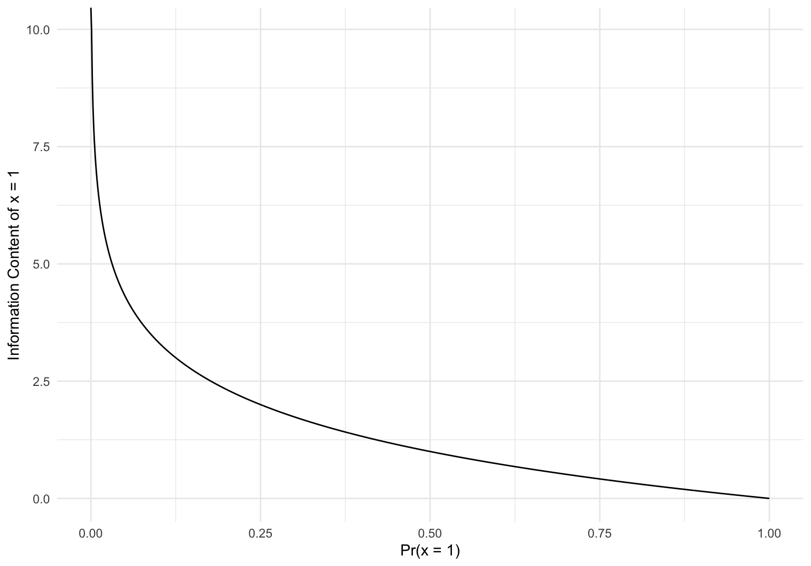

This section is not essential to understanding econometrics, but it will provide some neat context later on. Many problems in statistics become much simpler if are data is generated from a special type of distribution. We already saw this in sec-testing when talking about UMP tests and the MLR property. It turns out there is a general class of probability distributions which not only satisfy the MLR property, but also satisfy many other convenient properties which will make our lives easier later on. This section will introduce this class of distributions which are known as the exponential family of distributions. Right from the get go, a rather large disclaimer is in order. The only time we will be able to reap the benefits of distributions in the exponential family is when we assume that our model \(\mathcal P\) is a parametric model which is also regular (each element \(P_\boldsymbol{\theta}\in \mathcal P\) corresponds to a unique distribution \(f_{\mathbf{X}}(\mathbf{x}\mid \boldsymbol{\theta})\)).1 Many common models in econometrics will not fall into this category as it requires specifying a distribution of some unobservable quantity. This is why exponential families are usually emphasized more in the setting of statistics, particularly when covering standard/classical topics.
4.1 Motivation – Sufficiency
In a sense, a statistic \(T:\mathcal X \to\mathcal T\) (where \(\mathcal T\) is almost always \(\mathbb R^k\)) is a way of boiling down information about a sample \(\mathbf{x}\) to a single value \(T(\mathbf{x})\), where \(\mathbf{X}\sim P_\boldsymbol{\theta}\) for some regular parametric model \(\mathcal P\). We then use the information “captured” in the statistic \(T(\mathbf{x})\) to estimate \(\boldsymbol{\theta}\). Once we have the value \(T(\mathbf{x})\), does the particular value of \(\mathbf{x}\) matter? Is it possible that we can just ignore \(\mathbf{x}\) if \(T(\mathbf{x})\) encompasses all the relevant information provided by our sample? Here are two examples that show that this may, or may not, be the case.
Example 4.1 Suppose \(X_i \overset{iid}{\sim}\text{Ber}(p)\). If we want to estimate \(p\), the natural estimator is \(\hat p(\mathbf{X}) = \sum_{i=1}^n X_i / n\) when we observe a sample \(\mathbf{X}= (X_1,\ldots, X_n)\). Let’s just focus on the part of this function that depends on \(\mathbf{X}\), that being the statistic \(T(\mathbf{X}) = \sum_{i=1}^n X_i\) which records the number of successes over \(n\) Bernoulli trials. We can think of our estimation process as follows: we observe \(\mathbf{x}\), we calculate \(T(\mathbf{x})\), we calculate our estimate \(\hat p\) using only the value \(T(\mathbf{x})\). Do we lose anything by only using \(T(x)\)? If this were the case, then what would that look like mathematically? For some insight, let’s look at the distribution of our sample \(f_{\mathbf{X}}(\mathbf{x}\mid p)\). If \(f_X(x_i\mid p)\) is the distribution associated with \(\text{Ber}(p)\), then \[f_{\mathbf{X}}(\mathbf{x}\mid p) = \prod_{i=1}^nf_X(x_i\mid p) = \prod_{i=1}^np^{x_1}(1-p)^{1-x_i} = p^{\sum_{i=1}^n x_i}(1-p)^{n-\sum_{i=1}^n x_i} = p^{T(\mathbf{x})}(1-p)^{n-T(\mathbf{x})}.\] Substituting \(T(\mathbf{x})\) into this distribution illuminates a striking feature – \(f_{\mathbf{X}}(\mathbf{x}\mid p)\) depends on \(\mathbf{x}\) only through the statistic \(T(\mathbf{x})\). In other words, if we are estimating \(\hat p\) (or rather estimating \(f_{\mathbf{X}}(\mathbf{x}\mid p)\) vicariously through \(\hat p\)), then we only need to know the value of our statistic \(T(\mathbf{x})\). The statistic contains all the relevant information needed for estimation. Another way to think about this is with an experiment. Suppose an unfair coin lands on heads with probability \(p\), and \(\mathbf{X}= (X_1,\ldots X_n)\) records the number of heads observed (\(X_i = 1\) means the \(i\)th flip is heads). If you are going to estimate \(p\) with \(\hat p(\mathbf{X}) = \sum_{i=1}^n X_i / n\), does it matter the order in which the coins landed on heads? If \(n = 2\), is there a difference between observing \(\mathbf{x}= (1,0)\) and \(\mathbf{x}' = (0,1)\)? No – the only information you really care about is the fact that the coin landed on heads once, i.e \(T(\mathbf{x}) = T(\mathbf{x}') = 1\). In an effort to beat a dead horse, let \(n = 10\), and \(T(\mathbf{x}) = 7\) (the coin lands on heads 7 times). There are \(3,628,800\) possible permutations where we get \(7\) heads, all of which will give the same estimate of \(\hat p(\mathbf{x}) = 0.7\).
n <-10x <-c(rep(1, 7), rep(0, n -7))samples <-permn(x)#write estimator s.t we specify which sample we want to use from the permutationsp_hat <-function(i){ x <- samples[[i]]sum(x)/n}estimates <-sapply(1:length(samples), p_hat)#What % of our estimates are 0.7?mean(estimates ==0.7)
[1] 1
Example 4.2 Suppose \(X_i \overset{iid}{\sim}N(\mu,\sigma^2)\) for a known \(\sigma^2\). We could estimate using the median \(\hat \mu(\mathbf{X})\), \[\hat \mu(\mathbf{X}) = \begin{cases}X_{(n+1)/2} & n\text{ odd}\\ \frac{X_{n/2} + X_{n/2 + 1}}{2} & n\text{ even} \end{cases}.\] In this case, is \(\hat \mu(\mathbf{X})\) calculated via a statistic which encapsulates all the relevant information about \(\mathbf{x}\)? Heuristically, it seems like this is not the case. The only real statistic that \(\hat\mu(\mathbf{X})\) is a function of is itself, so let \(T(\mathbf{X}) = \hat\mu(\mathbf{X})\). Suppose we observe \(\mathbf{x}= (-100, 0, 0.1)\) and \(\mathbf{x}' = (-0.1,0, 100)\). For both of these observations we have \(T(\mathbf{X}) = \hat \mu(\mathbf{x}) = 0\), but discarding \(\mathbf{x}'\) and \(\mathbf{x}\) doesn’t seem like the best idea here, because they have drastically different sample means, numbers that seem especially relevant here. Admittedly, this argument lacks the rigor of the previous one, but it hopefully illustrates that not all estimators can be calculated with some magic statistic that perfectly captures an observation \(\mathbf{x}\).
To formalize this property of optimal data reduction, we will consider the distribution \(f_{\mathbf{X}}(\mathbf{x}\mid \boldsymbol{\theta})\) like we did in the first example. The definition is due to Fisher (1922).
Definition 4.1 Let \(\mathbf{X}\sim P_\boldsymbol{\theta}\) for some \(P_\boldsymbol{\theta}\in \mathcal P\), where \(\mathcal P\) is a regular parametric model. A statistic \(T(\mathbf{X})\) is sufficient for \(P_\boldsymbol{\theta}\in \mathcal P\) (or for \(\boldsymbol{\theta}\)), if \(f_{\mathbf{X}}(\mathbf{x}\mid T(\mathbf{x}), \boldsymbol{\theta})\) is not a function of \(\boldsymbol{\theta}\).
Sufficiency can seem a little abstract at first, but there are a few different ways to think about it that may make it a bit clearer. One way was already highlighted by the Bernoulli trials example. Sufficiency means that if we have \(T(\mathbf{x}) = T(\mathbf{x}')\) for any two observed samples \(\mathbf{x},\mathbf{x}' \in \mathcal X\), then \(\mathbf{x}\) and \(\mathbf{x}'\) provide us the same amount of information about \(\boldsymbol{\theta}\). Another way of thinking about sufficiency is via a thought experiment involving two statisticians. Suppose Statistician A and Statistician B want to estimate \(\boldsymbol{\theta}\). Statistician A has access to some random sample \(\mathbf{x}\), while Statistician B only knows \(T(\mathbf{x})\). If \(T\) is a sufficient statistic, then Statistician B is at no disadvantage because he can generate his own random sample! He may not know \(\boldsymbol{\theta}\), but he knows \(T(\mathbf{x})\), and \(f_{\mathbf{X}}(\mathbf{x}\mid T(\mathbf{x}), \boldsymbol{\theta})\) does not depend on \(\boldsymbol{\theta}\), so he can just simulate a random sample from \(f_{\mathbf{X}}(\mathbf{x}\mid T(\mathbf{x}))\).
Using the definition of sufficiency to verify a statistic has the property can be a bit cumbersome, so we usually do so using a famous theorem.
Theorem 4.1 (Fisher–Neyman factorization theorem) Let \(\mathbf{X}\sim P_\boldsymbol{\theta}\) for some \(P_\boldsymbol{\theta}\in \mathcal P\), where \(\mathcal P\) is a regular parametric model. The statistic \(T(\mathbf{X})\) is sufficient if and only if there exist non-negative functions \(g:\mathcal T\times \Theta\to\mathbb R\) and \(h:\mathcal X\to \mathbb R\) such that \[f_\mathbf{X}(\mathbf{x}\mid\boldsymbol{\theta}) = g(T(\mathbf{x}) \mid \boldsymbol{\theta})h(\mathbf{x}).\]
Proof. space
\((\Longrightarrow)\) Suppose \(T\) is a sufficient statistic. The statistic \(T\) is a function of \(\mathbf{x}\), so the joint density of \((\mathbf{X}, T(\mathbf{X})\) is simply the density of \(\mathbf{X}\). \[f_{\mathbf{X}}(\mathbf{x}\mid \boldsymbol{\theta}) = f_{\mathbf{X}, T(\mathbf{X})}(\mathbf{x}, T(\mathbf{x})\mid \boldsymbol{\theta})\] BY properties of conditional variables, \[ f_{\mathbf{X}}(\mathbf{x}\mid \boldsymbol{\theta}) = f_{\mathbf{X}, T(\mathbf{X})}(\mathbf{x}, T(\mathbf{x})\mid \boldsymbol{\theta}) = \underbrace{f_{X\mid T(\mathbf{X})}(\mathbf{x}\mid T(\mathbf{x}), \boldsymbol{\theta})}_{h(\mathbf{x})}\underbrace{f_{T(\mathbf{X})}(T(\mathbf{x})\mid\boldsymbol{\theta})}_{g(T(\mathbf{x}) \mid \boldsymbol{\theta})}.\] We know that \(f_{X\mid T(\mathbf{X})}(\mathbf{x}\mid T(\mathbf{x}), \boldsymbol{\theta})\) is a suitable candidate for \(h(\mathbf{x})\), because \(T\) is sufficient, so \(f_{X\mid T(\mathbf{X})}(\mathbf{x}\mid T(\mathbf{x}), \boldsymbol{\theta})\) is not a function of \(\boldsymbol{\theta}\).
\((\Longleftarrow)\) Suppose \(f_\mathbf{X}(\mathbf{x}\mid\boldsymbol{\theta}) = g(T(\mathbf{x}) \mid \boldsymbol{\theta})h(\mathbf{x})\), and fix \(T(\mathbf{x}) = t\). By the definition of conditional expectation, \[\begin{align*}
f_{\mathbf{X}\mid T(\mathbf{X})}(\mathbf{x}\mid t, \boldsymbol{\theta}) &= \frac{f_{X, T(\mathbf{X})}(\mathbf{x},t\mid\boldsymbol{\theta})}{f_{T(\mathbf{x})}(t\mid \boldsymbol{\theta})}\\
& = \frac{f_{X}(\mathbf{x}\mid\boldsymbol{\theta})}{f_{T(\mathbf{x})}(t\mid \boldsymbol{\theta})} &(T(\mathbf{x})\text{ function of }\mathbf{x})\\
& = \frac{g(t \mid \boldsymbol{\theta})h(\mathbf{x})}{f_{T(\mathbf{x})}(t\mid \boldsymbol{\theta})} &(f_\mathbf{X}(\mathbf{x}\mid\boldsymbol{\theta}) = g(t \mid \boldsymbol{\theta})h(\mathbf{x}))\\
& = \frac{g(t \mid \boldsymbol{\theta})h(\mathbf{x})}{f_{T(\mathbf{x})}(t\mid \boldsymbol{\theta})}
\end{align*}\] We can write the denominator in terms of \(f_{T(\mathbf{x})}(t\mid \boldsymbol{\theta})\) by integrating \(f_\mathbf{X}(\mathbf{x}\mid\boldsymbol{\theta})\) over all \(\mathbf{x}\in \mathcal X\) such that \(T(\mathbf{x}) = t\) for some fixed \(t\): \[f_{T(\mathbf{x})}(t\mid \boldsymbol{\theta}) = \int_{\{\mathbf{x}\mid T(\mathbf{x}) = t\}} f_\mathbf{X}(\mathbf{x}\mid\boldsymbol{\theta})\ d\mathbf{x}= \int_{\{\mathbf{x}\mid T(\mathbf{x}) = t\}} g(t\mid \boldsymbol{\theta})h(\mathbf{x})\ d\mathbf{x}= g(t\mid \boldsymbol{\theta})\int_{\{\mathbf{x}\mid T(\mathbf{x}) = t\}}h(\mathbf{x})\ d\mathbf{x}\] Therefore, \[ f_{\mathbf{X}\mid T(\mathbf{X})}(\mathbf{x}\mid t, \boldsymbol{\theta}) = \frac{g(t \mid \boldsymbol{\theta})h(\mathbf{x})}{g(t\mid \boldsymbol{\theta})\int_{\{\mathbf{x}\mid T(\mathbf{x}) = t\}}h(\mathbf{x})\ d\mathbf{x}} = \frac{h(\mathbf{x})}{\int_{\{\mathbf{x}\mid T(\mathbf{x}) = t\}}h(\mathbf{x})\ d\mathbf{x}},\] which is not a function of \(\boldsymbol{\theta}\). This makes \(T(\mathbf{x})\) a sufficient statistic.
Example 4.3 Suppose \(X_i \overset{iid}{\sim}N(\mu, \sigma^2)\) for a known \(\sigma^2\). After some calculation, we can conclude \[\begin{align*}
f_\mathbf{X}(\mathbf{x}\mid \mu)& = \prod_{i=1}^n f_X(x_i \mid \mu )\\
& = \prod_{i=1}^n \frac{1}{\sigma\sqrt{2\pi}}\exp \left[-\frac{(x_i - \mu)^2}{2\sigma^2}\right]\\
& = (2\pi\sigma^2)^{-n/2}\exp\left[-\frac{1}{2\sigma^2}\sum_{i=1}^n(x_i - \bar x)^2\right] \exp\left[-\frac{n}{2\sigma^2}(\mu - \bar x)^2\right]\\
& = \underbrace{(2\pi\sigma^2)^{-n/2}\exp\left[-\frac{1}{2\sigma^2}\sum_{i=1}^n(x_i - \bar x)^2\right]}_{h(\mathbf{x})} \underbrace{\exp\left[-\frac{n}{2\sigma^2}(\mu - T(\mathbf{x}))^2\right]}_{g(T(\mathbf{x})\mid \mu)} & (T(\mathbf{x}) = \bar x),
\end{align*}\] so \(T(\mathbf{X}) = \bar X\) is a sufficient statistic for \(\mu\).
4.2 Exponential Families
Whether \(T(\mathbf{X})\) is sufficient for \(P_\boldsymbol{\theta}\) depends entirely on the distribution \(f_{\mathbf{X}}(\mathbf{x}\mid \boldsymbol{\theta})\). Is it possible to describe the entire class of distributions which admit a sufficient statistic? Do they all take a similar form? As proved independently by Pitman (1936), Koopman (1936), and Darmois (1935), the answer is yes (sort-of)! We will broaden our view a bit by considering a vector of statistics \(\mathbf T(\mathbf{X})\).
Theorem 4.2 (Pitman–Koopman–Darmois theorem) Suppose \(X_i \overset{iid}{\sim}P_\boldsymbol{\theta}\) where the support of \(f_{\mathbf{X}}(x_i\mid\boldsymbol{\theta})\) does not depend on \(\boldsymbol{\theta}\). There exists a sufficient statistic \(\mathbf T:\mathcal X\to \mathbb R^k\) such that \(k\) is fixed for all sample sizes \(n\)if and only if\(f_{\mathbf{X}}\) can be written as \[f_{\mathbf{X}}(\mathbf{x}\mid\boldsymbol{\theta})= h(\mathbf{x})\exp[\boldsymbol \eta(\boldsymbol{\theta})\cdot\mathbf T(\mathbf{x}) - A(\boldsymbol{\eta})]\] for functions \(h:\mathcal X \to \mathbb R\), \(\boldsymbol \eta:\boldsymbol \Theta \to \mathbb R^k\), \(A:\mathcal X \to \mathbb R\).
Proving the sufficiency of this condition is a direct application of Theorem Theorem thm-fac, as we can just let \(g(\mathbf T(\mathbf{x}) \mid \boldsymbol{\theta}) = \exp[\boldsymbol \eta(\boldsymbol{\theta})\cdot\mathbf T(\mathbf{x}) - A(\boldsymbol{\eta})]\). Proving this is a necessary condition is a bit more complicated and relies on the assumptions that the dimension of \(\mathbf T\) is fixed, and that the support of \(f_{\mathbf{X}}(x_i\mid\boldsymbol{\theta})\) is independent of \(\boldsymbol{\theta}\). The second condition should seem familiar, as it plays a crucial role in proving the Cramér–Rao lower bound holds (see sec-est). The distributions given by the Pitman–Koopman–Darmois theorem merit their own definition.
Definition 4.2 A regular parametric model \(\mathcal P\) is an exponential family if \[f_{\mathbf{X}}(\mathbf{x}\mid\boldsymbol{\theta})= h(\mathbf{x})\exp[\boldsymbol \eta(\boldsymbol{\theta})\cdot\mathbf T(\mathbf{x}) - A(\boldsymbol{\eta})].\] We refer to \(\mathbf T(\mathbf{x})\) as the sufficient statistic, \(\boldsymbol\eta(\boldsymbol{\theta})\) as the natural parameter, and \(A(\boldsymbol{\eta})\) as the cumulant function. In the event \(\boldsymbol\eta(\boldsymbol{\theta}) = \boldsymbol{\theta}\), the exponential family is in canonical form. If \(\boldsymbol\eta(\boldsymbol{\theta}) = \boldsymbol{\theta}\) and \(\mathbf T(\mathbf{x}) = \mathbf{x}\), we say our model is a natural exponential family.
Sometimes, people will opt to write the cumulant function in terms of the parameter \(\boldsymbol{\theta}\), which is completely fine.
Example 4.4 If \(X \overset{iid}{\sim}\text{Ber}(p)\) where \(n=1\), then \(T(\mathbf{X}) = \sum_{i=1}^n X_i = X\) is a sufficient statistic for \(p\), so \(f_{X}(x\mid p)\) is an exponential family by the Pitman–Koopman–Darmois theorem. \[\begin{align*}
f_{X}(x\mid p) & = p^x(1-p)^{1-x}\\
& = \exp[\log(p^x(1-p)^{1-x})]\\
& = \exp[x\log(p) + (1-x)\log(1-p))]\\
& = \exp[x(\log(p) - \log(1-p)) + \log(1-p)]\\
& = 1\cdot \exp\left[x\log\left(\frac{p}{1-p}\right) + \log(1-p)\right]\\
h(x) & = 1\\
T(x) & = x\\
\eta(p) & = \log\left(\frac{p}{1-p}\right)\\
A(\eta)& = -\log(1-p)\\
& = \log\left(1 + \frac{p}{1-p}\right)\\
& = \log\left[1 + \exp\left[\log\left(\frac{p}{1-p}\right)\right]\right]\\
& = \log[1 + \exp(\eta)]
\end{align*}\]
Example 4.5 For \(X\sim N(\mu,\sigma^2)\) where both \(\mu\) and \(\sigma^2\) are unknown,
Almost all the distributions we rely on happen to be exponential families. A select collection of these, along with their associated sample and parameter space, are:
Distribution/Model
\(\mathcal X\)
\(\boldsymbol{\theta}\)
\(\boldsymbol \Theta\)
Bernoulli Distribution
\(\{0,1\}\)
\(p\)
\([0,1]\)
Binomial Distribution (\(n\) known)
\(\{0,1,\ldots,n\}\)
\(p\)
\([0,1]\)
Negative Binomial Distribution (failures \(r\) known)
Technically, listing some of these are redundant. The chi-squared distribution and exponential distribution both special cases of the gamma distribution. The Bernoulli distribution is a binomial distribution where \(n=1\). The The natural parameters, sufficient statistic, and cumulant function of each of these distributions are:
Distribution/Model
\(\boldsymbol \eta(\boldsymbol{\theta})\)
\(h(\mathbf{x})\)
\(\mathbf T(\mathbf{x})\)
\(A(\boldsymbol \eta)\)
Bernoulli Distribution
\(\log[1/(1-p)]\)
\(1\)
\(x\)
\(\log[1 + \exp(\eta)]\)
Binomial Distribution (\(n\) known)
\(\log[1/(1-p)]\)
\(\binom{n}{x}\)
\(x\)
\(n\log[1 + \exp(\eta)]\)
Negative Binomial Distribution (failures \(r\) known)
It’s worth noting there are some really important distributions that are not exponential families, namely the student’s \(t-\)distribution, the uniform distribution, and the \(F-\)distribution. Interestingly, the \(F-\)distribution is asymptotically equivalent to a \(\chi^2\) distribution, and the \(t-\)distribution is asymptotically equivalent to the standard normal distribution, so as \(n\to\infty\), these “become” exponential families.
4.3 Properties
Exponential families have a myriad of properties that make them easy to work with. First, let’s look into the cumulant function \(A(\boldsymbol{\eta})\). The role of \(A(\boldsymbol{\eta})\) is to normalize the density \(f_{\mathbf{X}}(\mathbf{x}\mid\boldsymbol{\theta})\) when we express it as an exponential family. Without getting into the proof behind the Pitman–Koopman–Darmois theorem, it would seem that the function \(h(\mathbf{x})\exp[\boldsymbol \eta(\boldsymbol{\theta})\cdot\mathbf T(\mathbf{x})]\) would suffice for \(\mathbf T\) to be a sufficient statistic for \(\boldsymbol{\theta}\), because we could just let \(g(\mathbf T(\mathbf{x})\mid \boldsymbol{\theta}) = \exp[\boldsymbol \eta(\boldsymbol{\theta})\cdot\mathbf T(\mathbf{x})]\) and apply the Fisher–Neyman factorization theorem. The issue with this is that \(h(\mathbf{x})\exp[\boldsymbol \eta(\boldsymbol{\theta})\cdot\mathbf T(\mathbf{x})]\) may not be a valid density function which integrates to \(1\) over \(\mathcal X\). To ensure it is a valid density, we need to find some normalizing scalar \(A\) which satisfies:
\[ \int_{\mathcal X}\frac{1}{A}\left[h(\mathbf{x})\exp[\boldsymbol \eta(\boldsymbol{\theta})\cdot\mathbf T(\mathbf{x})]\right]\ d\mathbf{x}= 1 \] We could also take the scalar to be \(\exp \kappa\), giving \[ \int_{\mathcal X}h(\mathbf{x})\exp[\boldsymbol \eta(\boldsymbol{\theta})\cdot\mathbf T(\mathbf{x})-A]\ d\mathbf{x}= 1.\]
If we solve for \(A\), we have
\[\begin{align*}
\implies & \int_{\mathcal X}h(\mathbf{x})\exp[\boldsymbol \eta(\boldsymbol{\theta})\cdot\mathbf T(\mathbf{x})-A]\ d\mathbf{x}= 1\\
\implies & \exp(-A)\int_{\mathcal X}h(\mathbf{x})\exp[\boldsymbol \eta(\boldsymbol{\theta})\cdot\mathbf T(\mathbf{x})]\ d\mathbf{x}= 1\\
\implies & A = \log\left(\int_{\mathcal X}h(\mathbf{x})\exp[\boldsymbol \eta(\boldsymbol{\theta})\cdot\mathbf T(\mathbf{x})]\ d\mathbf{x}\right)
\end{align*}\] This constant is a function of \(\boldsymbol{\eta}\) only, as the dependence on \(\mathbf{x}\) is eliminated when integrating, so our constant really should be \(A(\boldsymbol{\eta})\). This is the cumulant function. Besides it role in normalizing the reparameterized density, the cumulant function is inherently related to the moments of \(\mathbf T(\mathbf{x})\).
Definition 4.3 Suppose \(\mathbf{X}\sim F_{\mathbf{X}}\). The moment-generating function (MGF), denoted as \(M_{\mathbf{X}}(\mathbf t)\), is defined as \[ M_{\mathbf{X}}(\mathbf t) = \text{E}\left[\exp(\mathbf t'\mathbf{X})\right].\] The cumulant-generating function (CMF), denoted as \(K_{\mathbf{X}}(\mathbf t)\), is defined as \[K_{\mathbf{X}}(\mathbf t) = \log(\text{E}\left[\exp(\mathbf t'\mathbf{X})\right]) = \log M_{\mathbf{X}}(\mathbf t).\]
The cumulant-generating function is an alternative to the more common moment-generating function. Both aim to provide a more convenient way to work with random variables than working directly with the density \(f_{\mathbf{X}}\) or distribution \(F_{\mathbf{X}}\), both of which often require integration.2 The defining property of moment-generating functions and cumulant-generating functions is that we can calculate quantities like expected value and variance via differentiation. This is a win, because differentiation much more straightforward than integration (in theory and in practice). The following lemma solidifies this fact.
Lemma 4.1 Let \(M_{\mathbf{X}}(\mathbf t)\) and \(K_{\mathbf{X}}(\mathbf t)\) be the MGF and CMF, respectively, of a random vector \(\mathbf{X}\). For any integer \(r = r_1 + \cdots + r_n\), we have \[\begin{align*}
\frac{\partial^r M_{\mathbf{X}}}{\partial t_1^{r_1}\cdots \partial t_n^{r_n}}(\mathbf{0}) & = \text{E}\left[X_1^{r_1}\cdots X_n^{r_n}\right],\\
\frac{\partial K_{\mathbf{X}}}{\partial \mathbf t}(\mathbf{0}) & = \text{E}\left[\mathbf{X}\right],\\
\frac{\partial^2 K_{\mathbf{X}}}{\partial \mathbf t \partial \mathbf t'}(\mathbf{0}) & = \text{Var}\left(\mathbf{X}\right)
\end{align*}\] The various derivatives of \(K_{\mathbf{X}}(\mathbf t)\) are known as cumulants of \(X\), and happen to coincide with expectation and variance (both specific moments of \(X\)) for the derivatives shown above.
Proving this is a neat application of Taylor series, and you may have seen it in an undergrad probability course. When applying this to exponential families, we can relate the cumulant function \(A(\boldsymbol{\eta})\) to the expectation and variance of \(\mathbf{X}\), hence its name.
Proposition 4.1 Suppose \(\mathbf{X}\sim P_\boldsymbol{\theta}\), where \(P_\boldsymbol{\theta}\in \mathcal P\) for an exponential family \(\mathcal P\). The MGF and KGF of \(\mathbf T(\mathbf{X})\) are given as: \[\begin{align*}
M_{\mathbf T(\mathbf{X})}(\mathbf t) & = \exp[A(\boldsymbol{\eta}+ \mathbf t) - A(\boldsymbol{\eta})],\\
K_{\mathbf T(\mathbf{X})}(\mathbf t) & = A(\boldsymbol{\eta}+ \mathbf t) - A(\boldsymbol{\eta}).
\end{align*}\] Consequently, we have \[\begin{align*}
\text{E}\left[\mathbf T(\mathbf{X})\right] & = \frac{\partial A(\boldsymbol{\eta})}{\partial \boldsymbol{\eta}} = \nabla_\boldsymbol{\eta}A(\boldsymbol{\eta}),\\
\text{Var}\left(\mathbf T(\mathbf{X})\right) & = \frac{\partial ^2A(\boldsymbol{\eta})}{\partial \boldsymbol{\eta}\partial \boldsymbol{\eta}'}.
\end{align*}\]
Corollary 4.1 Suppose \(\mathbf{X}\sim P_\boldsymbol{\theta}\), where \(P_\boldsymbol{\theta}\in \mathcal P\) for a natural exponential family \(\mathcal P\). Then \[\begin{align*}
\text{E}\left[\mathbf{X}\right] & = \frac{\partial A(\boldsymbol{\eta})}{\partial \boldsymbol{\eta}} = \nabla_\boldsymbol{\eta}A(\boldsymbol{\eta}),\\
\text{Var}\left(\mathbf{X}\right) & = \frac{\partial ^2A(\boldsymbol{\eta})}{\partial \boldsymbol{\eta}\partial \boldsymbol{\eta}'}.
\end{align*}\]
Proof. If \(\mathcal P\) is a natural exponential family, then \(T(\mathbf{X}) = \mathbf{X}\).
Example 4.6 If \(X \sim N(\mu,\sigma^2)\), then \(A(\boldsymbol{\eta}) = -\eta_1^2/4\eta_2 - \log(-2\eta_2)/2\) for \(\boldsymbol{\eta}= [\mu/\sigma^2, -1/2\sigma^2]'\). The sufficient statistic is \([x,x^2]'\). We have: \[\begin{align*}
\text{E}\left[\mathbf T(\mathbf{X})\right] & = \frac{\partial}{\partial \boldsymbol{\eta}}[-\eta_1^2/4\eta_2 - \log(-2\eta_2)/2]\\
& = \begin{bmatrix} - \frac{\eta_1}{2\eta_2} & \frac{\eta_1^2}{4\eta_2^2} - \frac{1}{2\eta_2} \end{bmatrix} \\
& = \begin{bmatrix} - \frac{\mu/\sigma^2}{2(-1/2\sigma^2)} & \frac{(\mu/\sigma^2)^2}{4(-1/2\sigma^2)^2} - \frac{1}{2(-1/2\sigma^2)} \end{bmatrix}\\
& = \begin{bmatrix} \mu & \mu^2 - \sigma^2 \end{bmatrix}
\end{align*}\]
Exponential families also exhibit convexity in two respects.
Proposition 4.2 Suppose \(\mathbf{X}\sim P_\boldsymbol{\theta}\), where \(P_\boldsymbol{\theta}\in \mathcal P\) for an exponential family \(\mathcal P\). The natural parameter space, defined as \[ \mathcal N = \left\{\boldsymbol{\eta}\ \bigg|\ \int_{\mathcal X}\exp[\boldsymbol{\eta}\cdot \mathbf T(\mathbf{x})]\ d\mathbf{x}<\infty \right\},\] is a convex set. In addition, the cumulant function \(A(\boldsymbol{\eta})\) is convex on the set \(\mathcal N\)
Proof. To show the convexity of \(\mathcal N\), we must show that \(\alpha\boldsymbol{\eta}_1 + (1-\alpha)\boldsymbol{\eta}_2 \in \mathcal N\) for any \(\alpha \in [0,1]\). This means we must verify that the following integral is finite: \[ \int_{\mathcal X}h(\mathbf{x})\exp[(\alpha\boldsymbol{\eta}_1 + (1-\alpha)\boldsymbol{\eta}_2)\cdot \mathbf T(\mathbf{x})]\ d\mathbf{x}<\infty .\] This happens to be an application of Hölder’s Inequality. \[\begin{align*}
\int_{\mathcal X}h(\mathbf{x})\exp[(\alpha\boldsymbol{\eta}_1 + (1-\alpha)\boldsymbol{\eta}_2)\cdot \mathbf T(\mathbf{x})]\ d\mathbf{x}& =\left(\int_{\mathcal X}h(\mathbf{x})\exp[(\alpha\boldsymbol{\eta}_1 + (1-\alpha)\boldsymbol{\eta}_2)\cdot \mathbf T(\mathbf{x})]\ d\mathbf{x}\right)^1 \\ & = \left(\int_{\mathcal X}h(\mathbf{x})\exp[(\alpha\boldsymbol{\eta}_1 + (1-\alpha)\boldsymbol{\eta}_2)\cdot \mathbf T(\mathbf{x})]\ d\mathbf{x}\right)^{\alpha + (1-\alpha)} \\& = \left(\int_{\mathcal X}h(\mathbf{x})\exp[(\alpha\boldsymbol{\eta}_1)\cdot \mathbf T(\mathbf{x})]\exp[((1-\alpha)\boldsymbol{\eta}_2)\cdot \mathbf T(\mathbf{x})]\ d\mathbf{x}\right)^ {\alpha + (1-\alpha)}\\
& \le \underbrace{\left(\int_{\mathcal X}h(\mathbf{x})\exp[(\alpha\boldsymbol{\eta}_1)\cdot \mathbf T(\mathbf{x})]\ d\mathbf{x}\right)^{\alpha}}_{\boldsymbol{\eta}_2 \in \mathcal N \implies < \infty}\underbrace{\left(\int_{\mathcal X}h(\mathbf{x})\exp[((1-\alpha)\boldsymbol{\eta}_2)\cdot \mathbf T(\mathbf{x})]\ d\mathbf{x}\right)^{1-\alpha}}_{\boldsymbol{\eta}_2 \in \mathcal N \implies < \infty}
\end{align*}\] The integral is finite, so \(\mathcal N\) is convex. If we take the logarithm of both sides of this inequality, we find that \(A(\boldsymbol{\eta})\) is a convex function, recalling that \(A(\boldsymbol{\eta})\) can be written as the log of the integral of \(\exp[\boldsymbol{\eta}\cdot \mathbf T(\mathbf{x})]\) over \(\mathcal X\). \[\begin{align*}
&\log\left(\int_{\mathcal X}h(\mathbf{x})\exp[(\alpha\boldsymbol{\eta}_1 + (1-\alpha)\boldsymbol{\eta}_2)\cdot \mathbf T(\mathbf{x})]\ d\mathbf{x}\right) \le \alpha \log\left(\int_{\mathcal X}h(\mathbf{x})\exp[(\alpha\boldsymbol{\eta}_1)\cdot \mathbf T(\mathbf{x})]\ d\mathbf{x}\right) + (1- \alpha) \log\left(\int_{\mathcal X}h(\mathbf{x})\exp[((1-\alpha)\boldsymbol{\eta}_2)\cdot \mathbf T(\mathbf{x})]\ d\mathbf{x}\right)\\
\implies & A[(\alpha\boldsymbol{\eta}_1 + (1-\alpha)\boldsymbol{\eta}_2)] \le \alpha A(\boldsymbol{\eta}_1) + (1-\alpha)A(\boldsymbol{\eta}_2)
\end{align*}\] This makes \(A\) convex.
Finally, we can show that in one dimension, exponential families exhibit the MLR property when \(\eta\) is an increasing function. Consequently, we can always apply the Karlin-Rubin theorem from sec-testing in this case.
Theorem 4.3 (Exponential Families and MLR) When \(\dim(\boldsymbol{\theta}) = 1\) and \(\eta(\theta)\) is non-decreasing, exponential families exhibit the MLR property in that sufficient statistic \(T(x)\).
Proof. When \(f_X(\mathbf{x}\mid \theta) = h(x)\exp\left[\eta(\theta)T(\mathbf{x}) - A(\theta)\right]\), then the likelihood ratio is \[ \frac{f_X(\mathbf{x}\mid \theta_1)}{f_X(\mathbf{x}\mid \theta_0)} = \exp\left[(\eta(\theta_1)-\eta(\theta_0)T(x)) - (A(\theta_1) - A(\theta_0))\right].\] The derivative of this ratio with respect to the statistic \(T(x)\) is \[ [\eta(\theta_1)-\eta(\theta_0)]\cdot \frac{f_X(\mathbf{x}\mid \theta_1)}{f_X(\mathbf{x}\mid \theta_0)},\] where \([\eta(\theta_1)-\eta(\theta_0)] > 0\) because \(\eta\) is non-decreasing, and \(f_X(\mathbf{x}\mid \theta_1)/f_X(\mathbf{x}\mid \theta_0) > 0\) because it is the ratio of two probability densities. The derivative is therefore positive, and the likelihood ratio is monotonically increasing in \(T(x)\).
This theorem is particularly useful in the context of hypothesis testing. If our test statistic is a sufficient statistic, then by Theorem thm-kpd it is distributed according to an exponential family, exhibits the MLR property, and we can use Theorem thm-KR to construct a UMP test.
4.4 Entropy and the Maximum Entropy Principle
Sufficiency is not the only means of arriving at the exponential family. A second derivation deals with some basic concepts from information theory. Loosely speaking, information theory studies how information is stored and communicated. The discipline exists at the intersection of probability, computer science, electrical engineering, physics, and statistical mechanics. The foundations of information theory were outline in Shannon (1948), an article which happens to be the fourth most cited paper ever (according to Google Scholar).
A crucial aspect of the transmission of information is uncertainty. If we have a probability space \((\mathcal X,\mathcal F, P)\) and some random variable \(X\), how do we measure how “surprising” an event \(x\in \mathcal X\) is? The greater \(\Pr(X = x)\), the less surprising the outcome \(x\) is. We want to define some measure \(\text{Surprise}(x)\) such that:
\(\text{Surprise}(x) \to 1\) as \(\Pr(X = x)\to 0\) and \(\text{Surprise}(x) \to 0\) as \(\Pr(X = x)\to \infty\).
\(\text{Surprise}(x)\) is monotonic in \(\Pr(X= x)\).
These properties are satisfied by the function \(\log(1/\Pr(X= x))\).
Definition 4.4 The information content of an outcome \(x\in \mathcal X\) is \[ I_X(x) = \log_b\left(\frac{1}{\Pr(X=x)}\right) = -\log_b[\Pr(X= x)]\] for a base \(b\). If \(b = 2\) then the unit \(I_X(x)\) is given in bits. If \(b\) is the natural exponent, the unit is nat.
Example 4.7 Suppose \(X \sim \text{Bernoulli}(p)\), where \(\mathcal X = \{0,1\}\) and \(\Pr(X = 1) = p\). The information content for \(x = 1\) (a “success”) is \[I_X(1) = \log_2(1/p).\]
Show code which generates figure
tibble(p = (0:1000)/1000,I =-log2(p)) %>%ggplot(aes(p, I)) +geom_line() +theme_minimal() +labs(x ="Pr(x = 1)",y ="Information Content of x = 1")

Figure 4.1: Information for x = 1 for various values of the parameter p
If we average the information content over the sample space \(\mathcal X\), we get the entropy of a random variable.
Definition 4.5 The entropy of a random variable \(X\) is \[H(X) = \text{E}\left[I_X(x)\right] = -\int_\mathcal X \log_b[f(x)]\ dF_X = -\int_\mathcal X f(x) \log_b[f(x)]\ dx.\]
Entropy captures the average amount of information inherent in a random variable’s outcomes.
Example 4.8 Again, suppose \(X \sim \text{Bernoulli}(p)\). The entropy of \(X\) is \[\begin{align*}
H(X) = - \sum_{x\in \{0,1\}} \Pr(x) \log_2[\Pr(x)] = - (1-p)\log_2(1-p) - p \log_2(p).
\end{align*}\]
Warning: Removed 2 rows containing missing values or values outside the scale range
(`geom_line()`).
Figure 4.2: The entropy of a bernoulli random variable as a function of the parameter p
The greater the entropy, the greater the uncertainty associated with a random variables outcomes. In the event \(p\in\{0,1\}\), then we’re certain that \(x = 1\) or \(x=0\), and there is no uncertainty. If \(p=0.5\), it’s equally likely that \(x=1\) as it is that \(x=0\), so things are less certain.
We can also measure the relative entropy between two distributions. Henceforth we’ll stick to the natural logarithm.
Definition 4.6 Suppose \(X\) and \(Y\) are random variables with distributions \(f_X\) and \(F_Y\), respectively. The Kullback–Leibler (KL) divergence/relative entropy of \(f_X\) and \(F_Y\), denoted \(D_{KL}(f_X \mid\mid F_Y)\) is defined as \[ D_{KL}(f_X \mid\mid F_Y) = \int_{\mathcal X} f_X(t)\cdot \log \frac{f_X(t)}{f_Y(t)}\ dt.\]
KL divergence measures how “close” \(f_X\) is to \(F_Y\). Despite measuring “distance”, it is not a valid metric because it is not symmetric \(( D_{KL}(f_X \mid\mid F_Y) \neq D_{KL}(F_Y \mid\mid f_X) )\) and does not satisfy the triangle inequality.
Example 4.9 Suppose the role of an unfair six-sided die corresponds to a random variable \(X\) whose density is \(f_X(t) = x/21\) for \(t=1,\ldots,6\). If we want to model the role of the die, wrongfully assuming it is fair, we would pick \(f_Y(x) = 1/6\) for \(t=1,\ldots,6\).
Show code which generates figure
expand_grid(gr =c("Y", "X"), t =1:6) %>%mutate(f =ifelse(gr =="Y", 1/6, t/21)) %>%ggplot(aes(t, f)) +geom_segment(aes(x = t, xend = t, y=0, yend = f)) +geom_point(size =3) +theme_minimal() +facet_wrap(~gr, ncol =1) +labs(x ="Value of Die Roll", y ="Probability Density")
Figure 4.3: Respective densities of X and Y
In this case \(D_{KL}(f_X \mid\mid F_Y)\) measures the expected excess surprise from modeling the die roll with the random variable \(Y\) instead of \(X\).
Theorem 4.4 (Gibb’s Inequality)\(D_{KL}(f_X \mid\mid F_Y) \ge 0\)if and only if\(f_X \neq F_Y\).
Proof. The function \(-\log\) is convex, so by Jensen’s inequality \[\begin{align*}
D_{KL}(f_X \mid\mid F_Y) & = \int_{\mathcal X} f_X(t)\cdot \log \frac{f_X(t)}{f_Y(t)}\ dt\\
& = \int_{\mathcal X} f_X(t)\cdot -\log \frac{f_Y(t)}{f_X(t)}\ dt\\
& \ge -\log\left[\int_{\mathcal X} f_X(t)\frac{f_Y(t)}{f_X(t)}\ dt\right]\\
& = -\log\left[\int_{\mathcal X} f_Y(t)\ dt\right]\\
& = -\log 1\\
& = 0
\end{align*}\] space
Example 4.10 (Entropy of Uniform Distribution) Suppose \(X \sim \text{Uni}(a,b)\). The entropy of \(f_X\) is \[ H(X) = -\int_a^b\frac{1}{b-a}\log\left(\frac{1}{b-a}\right)\ dt = \log(b-a).\] It turns out, that the uniform distribution has the maximum entropy of all distributions contained on the interval \([a,b]\). Intuitively, if the probability \(X = x\) is uniform over \(x\in\mathcal X\), then there is no certainty about our outcomes. If you were asked to guess a realized value of \(X\) beforehand, you would have zero confidence in your guess, because all outcomes are equally likely. Formally, we want to solve the problem \[\max_{f} H(x)\text{ such that }\int_{a}^bf(t)\ dt= 1.\] The Lagrangian associated with this problem is \[\begin{align*}
\mathcal L(f) &= -H(t) - \lambda \left(\int_{a}^b f(t)\ dt - 1\right)\\
& = \int_a^b f(t) \log f(t)\ dt - \lambda \left(\int_{a}^b f(t)\ dt - 1 \right)\\
& = \int_a^b f(t) \log f(t) - \lambda f(t) \ dt - \lambda
\end{align*}\] Okay, but how do we optimize a function with respect to another function? We’re not picking some value to minimize \(\mathcal L\), we’re picking some function \(f_X\) (which happens to be a valid density on the support \([a,b]\)). Optimization problems like these are solved using the calculus of variations (see Clarke (2013)).3 If \(\mathcal F\) is the set of all real functions \(f:\mathbb R\to \mathbb R\), then \(\mathcal L:\mathcal F\to \mathbb R\). Mappings which take functions to numbers are known as functionals. The functional derivative of \(\mathcal L\) with respect to \(f\) is given as \[\frac{\delta \mathcal L}{\delta f} = \lim_{\varepsilon \to 0} \frac{\mathcal L(f + \varepsilon g) - \mathcal L(f)}{\varepsilon} \] for some arbitrary function \(g\in \mathcal F\).4 We can calculate functional derivatives directly appealing to the definition, but that’s a pain in the butt. Instead we’ll use the Euler-Lagrange equation which gives the derivative in the case where \(\mathcal L\) can be expressed as an integral: \[\mathcal L(f) = \int J(t,f(t), f'(t))\ dt \implies \frac{\delta \mathcal L}{\delta f} = \frac{\partial J}{\partial f} - \frac{d}{dt}\frac{\partial J}{\partial f'}.\] If we apply this to the Lagrangian we have the following first order conditions: \[\begin{align*}
\log f(t) & = -1 - \lambda \\
\int_{a}^b f(t)\ dt & = 1
\end{align*}\] We can solve for \(f(t) = \exp(-1-\lambda)\), which is constant, so our distribution \(f\) is constant over \([a,b]\), making it the uniform distribution. Explicitly, we have \[\begin{align*}
&\int_{a}^b f(t)\ dt = 1 \\
\implies & \exp(-1-\lambda) \int_{a}^b \ dt = 1\\
\implies & \exp(-1-\lambda) = \frac{1}{b-a}\\
\implies & f(t) = \frac{1}{b-a}.
\end{align*}\] Therefore \(f_X(t) = 1/(b-a)\) maximizes entropy.
So what is appealing about maximizing entropy? In a sense, a distribution with maximal entropy comes with minimal assumptions. This concept is known as the “principle of maximum entropy” as is due to Jaynes (1957). If we want to model a natural phenomenon with a probability distribution \(F_X\), the class of which define a regular model \(\mathcal P\), and we only know that \(\mathcal X = [a,b]\), then we should assume \(X\sim \text{Uni}(a,b)\) according to the principle of maximum entropy. What if we have additional information? For instance, we may have data that allows us to estimate \(\text{E}\left[X\right]\) or \(\text{Var}\left(X\right)\), something that can be done without specifying a regular model \(\mathcal P\).
Formally, consider defining a model \(\mathcal P\) where \(\mathbf{X}\sim P_{\boldsymbol{\theta}}\) such that \(\text{E}\left[\mathbf T(\mathbf{X})\right] = \boldsymbol{\theta}\) for some function \(\mathbf g(\mathbf{X}) = [T_1(\mathbf{X}), \ldots, T_k(\mathbf{X})]\). The function \(\mathbf T\) corresponds to all the distributional assumptions we are willing to make about \(\mathbf{X}\), and these assumptions come in the form of moment conditions. Where do these assumptions come from? If we observe \(n\) realizations of \((\mathbf{X}_1,\ldots, \mathbf{X}_n)\) then we can consistently estimate \(\text{E}\left[\mathbf T(\mathbf{X})\right]\), so for a sufficiently large \(n\) we will be able to approximate \(\boldsymbol{\theta}\). We could define the model as \[\begin{align*}
\mathcal P &= \{ P_{\boldsymbol{\theta}} \},\\
P_{\boldsymbol{\theta}} &= \{F_\mathbf{X}\mid \text{E}\left[\mathbf T(\mathbf{X})\right] = \boldsymbol{\theta}\},
\end{align*}\] where each model value \(P_{\boldsymbol{\theta}}\) is an infinite collection of distributions satisfying our moment conditions. This model is parametric but is not regular, as \(P_{\boldsymbol{\theta}}\) is not a singleton for all \(P_{\boldsymbol{\theta}} \in \mathcal P\). If we insisted on a regular model, we need to go beyond moment conditions and actually assume the functional form of \(F_X\). The principle of maximum entropy gives us a criterion to appeal to here. We will define \(\mathcal P\) such that each \(P_{\boldsymbol{\theta}} \in \mathcal P\) is a single distribution given by \[\begin{align*}
& \max_{f} H(\mathbf t)\text{ such that }\int_{\mathcal X}f(\mathbf t)\ d\mathbf t= 1\text{ and }\text{E}\left[\mathbf T(\mathbf{X})\right] = \boldsymbol{\theta}\\
\implies & \max_{f} H(\mathbf t)\text{ such that }\int_{\mathcal X}f(\mathbf t)\ d\mathbf t= 1\text{ and }\int_{\mathcal X}\mathbf T(\mathbf t)f(\mathbf t) \ d\mathbf t= \boldsymbol{\theta}
\end{align*}\] The Lagrangian associated with this problem is \[\begin{align*}
\mathcal L(f) &= - H(f) - \lambda \left(\int_{\mathcal X}f(\mathbf t)\ d\mathbf t-1\right) - \boldsymbol \eta \left(\int_{\mathcal X}\mathbf T(\mathbf t)f(\mathbf t)\ d\mathbf t-\boldsymbol{\theta}\right)\\
& = \int_{\mathcal X}f(\mathbf t) \log f(\mathbf t)\ d\mathbf t - \lambda \left(\int_{\mathcal X}f(\mathbf t)\ d\mathbf t-1\right) - \sum_{j=1}^k\eta_j\left(\int_{\mathcal X} T_j(\mathbf t)f(\mathbf t)\ d\mathbf t-c_j\right)\\
& = \int_{\mathcal X}\left[f(\mathbf t) \log f(\mathbf t)- \lambda(\mathbf t)- \sum_{j=1}^k\eta_jT_j(\mathbf t) \ d\mathbf t \right]- \lambda- \boldsymbol \eta \cdot \boldsymbol{\theta}
\end{align*}\] where the multiplier \(\lambda\) corresponds to the first constraint (\(f\) is a valid density), and the multipliers \(\boldsymbol{\eta}\) correspond to the second constraint (the moment conditions are satisfied). The corresponding first order conditions are: \[\begin{align*}
&\frac{\delta \mathcal L}{\delta f} = \log f(\mathbf{x}) + 1 - \lambda - \boldsymbol \eta \cdot \mathbf T(\mathbf{x}) = 0\\
&\int_{\mathcal X}f(\mathbf t)\ d\mathbf t = 1\\
&\int_{\mathcal X}\mathbf T(\mathbf t)f(\mathbf t) \ d\mathbf t = \boldsymbol{\theta}
\end{align*}\] Solving the first equation for \(f(\mathbf{x})\) gives \[ f(\mathbf{x}) = \exp(\lambda - 1)\exp(\boldsymbol{\eta}\cdot \mathbf T(\mathbf{x})).\] Substituting this into the second condition gives: \[\begin{align*}
&\int_{\mathcal X}\exp(\lambda- 1)\exp(\boldsymbol{\eta}\cdot \mathbf T(\mathbf{x}))\ d\mathbf{x}= 1\\
\implies & \exp(\lambda - 1)\int_{\mathcal X}\exp(\boldsymbol{\eta}\cdot \mathbf T(\mathbf{x}))\ d\mathbf{x}= 1\\
\implies & \int_{\mathcal X}\exp(\boldsymbol{\eta}\cdot \mathbf T(\mathbf{x}))\ d\mathbf{x}= \exp(1-\lambda)
\end{align*}\] We integrate over \(\mathbf{x}\), but \(\exp(1-\lambda)\) is still a function of \(\boldsymbol{\eta}\). Define \(A(\boldsymbol{\eta})\) as \[ A(\boldsymbol{\eta}) = \log\left[\int_{\mathcal X}\exp(\boldsymbol{\eta}\cdot \mathbf T(\mathbf{x}))\ d\mathbf{x}\right]\] such that \(\exp(\lambda - 1) = \exp (-A(\boldsymbol{\eta}))\). \[\begin{align*}
f(\mathbf{x}) &= \exp(\lambda - 1)\exp(\boldsymbol{\eta}\cdot \mathbf T(\mathbf{x})) \\ &= \exp(-A(\boldsymbol{\eta}))\exp(\boldsymbol{\eta}\cdot \mathbf T(\mathbf{x}))\\ & = \exp\left[\boldsymbol{\eta}\cdot \mathbf T(\mathbf{x}) - A(\boldsymbol{\eta})\right].
\end{align*}\] It turns out that \(f(\mathbf{x})\) is an exponential family where \(h(\mathbf{x}) = 1\). The reason \(h(\mathbf{x})\) is normalized in this instance has to do with a change of probability measure, but in general exponential families are those with maximum entropy.
Theorem 4.5 (Exponential Families Maximize Entropy) For all probability densities \(g(\mathbf{x})\) satisfying \(\text{E}\left[\mathbf T(\mathbf{x})\right] = \boldsymbol{\theta}\), \[ H(f) \ge H(g)\] where \(f(\mathbf{x})= \exp\left[\boldsymbol{\eta}\cdot \mathbf T(\mathbf{x}) - A(\boldsymbol{\eta})\right]\) is define as above.
Example 4.11 (Numerical Optimization) In a perfect world we could confirm the fact that exponential families maximize entropy by telling our computer “solve this constrained optimization problem” and confirming the result is an exponential family. Unfortunately, this is only feasible for discrete random variable. For continuous random variables, the solution to the maximum-entropy problem is a continuous function, so it’s not clear how to solve the problem numerically. Fortunately, we can approximate the optimization problem arbitrarily well via “discretization”, just like how we can approximate integrals with finite Riemann sums. Suppose our sample space \(\mathcal X\) is an interval of \(\mathbb{R}\). Instead of calculating the entropy by integrating over all of \(\mathcal X\), we can approximate it by calculating the sum of the entropy at a set of discrete points in \(\mathbf{X}\). If these points are \(\{x_i\}_{i=1}^n\), and the \(p_i=f(x_i)\) for a density function \(f\), then we have \[ H(t) = -\int_{\mathcal X}f(t)\log f(t)\ dt \approx - \sum_{i=1}^n p_i\log p_i \cdot\underbrace{(x_{i-1}-x_i)}_{\Delta x_i}.\] Similarly, our approximate constraints are \[\begin{align*}
\int_{\mathcal X}f(t)\ dt &\approx \sum_{i=1}^n p_i\cdot\Delta x_i = 1,\\
\int_{\mathcal X}\mathbf T(\mathbf t)f(\mathbf t) \ d\mathbf t &\approx \sum_{i=1}^n\mathbf T(x_i)p_i\cdot\Delta x_i = \boldsymbol{\theta}.
\end{align*}\] Our discretized problem is \[ \max_{\mathbf p} - \sum_{i=1}^n p_i\log p_i \cdot\Delta x_i \text{ such that }\sum_{i=1}^n p_i\cdot\Delta x_i = 1 \text{ and } \sum_{i=1}^n\mathbf T(x_i)p_i\cdot\Delta x_i = \boldsymbol{\theta},\] where the vector \(\mathbf{x}\) is the finite set of points which we approximate the sample space \(\mathcal X\) with, and \(\mathbf p = f(\mathbf{x})\) is the probability assigned to each of these points. For a concrete example, consider the problem of maximizing the entropy of a distribution over the interval \([0,1]\) with no other constraints. We’ve already shown that the resulting distribution is the uniform distribution using the calculus of variations, but let’s arrive at the same conclusion by solving the discretized version of the problem. We’ll divide the interval \([0,1]\) using 100 equally spaced points \(\{0.01,0.02,\ldots,0.99,1\}\) (\(\Delta x_i = 1/100\) for all \(i\)). We will find the vector \(\mathbf p\in\mathbb{R}^{100}\) which solves \[ \max_{\mathbf p} - \sum_{i=1}^n \frac{p_i\log p_i}{100} \text{ such that }\sum_{i=1}^n \frac{p_i}{100} = 1.\] We could solve this problem using R’s optim(), but instead we’ll use the CVXR package due to Fu, Narasimhan, and Boyd (2017) based on the work of Grant, Boyd, and Ye (2006). This package is made specifically for convex optimization problems (a category which our problem falls into), and is very user-friendly.
#set the dimension of the problemn <-100delta_x <-1/n#define variable, objective, constraints, and problemp <-Variable(n)#make sure to use CVXR's entr() functionobjective <-Maximize(sum(entr(p)*delta_x))constraints <-list(sum(p*delta_x) ==1)problem <-Problem(objective, constraints)#solve problemresult <-solve(problem)
If we plot our solution, we see that it corresponds perfectly to the uniform distribution.
Figure 4.4: Analytic and numerical solution to maximum entropy problem.
We’ll demonstrate Theorem thm-exmax with two more examples where we’ll derive exponential families by maximizing entropy. In each case we’ll confirm our work by solving the corresponding discretized optimization problem numerically.
Example 4.12 (Exponential Distribution) Suppose we want to model a random variable \(X\) with a sample space \(\mathcal X =[0,\infty)\) according to the principle of maximum entropy such that \(\text{E}\left[X\right]= \theta\). The Lagrangian is \[ \mathcal L(f) = \int_0^\infty f(t)\log f(t)\ dt - \lambda\left(\int_0^\infty f(t) \ dt - 1\right) - \eta\left(\int_0^\infty t\cdot f(t) \ dt - \theta\right),\]
which gives first order conditions:
\[\begin{align*}
&\frac{\delta \mathcal L}{\delta f} = \log f(x) + 1 - \lambda - \eta x = 0\\
&\int_0^\infty f(t) \ dt = 1\\
&\int_0^\infty t\cdot f(t) = \theta
\end{align*}\] Solving the first equation for \(f(x)\) gives \(f(x) = \exp(1-\lambda)\exp(\eta x)\). If we plug this into the second equation (the first constraint) we have: \[\begin{align*}
& \int_0^\infty \exp(\lambda - 1)\exp(\eta x) = 1\\
\implies & \exp(\lambda - 1)\int_0^\infty \exp(\eta x) = 1\\
\implies & \exp(\lambda - 1)\left[\frac{1}{\eta}\exp(\eta x)\right]_0^\infty = 1\\
\implies & \exp(\lambda - 1)(-1/\eta) = 1 & (-1/\eta < 0)
\end{align*}\] If \(-1/\eta \ge 0\), then the improper integral will not converge. Let’s repeat this step with the second integral: \[\begin{align*}
& \int_0^\infty x\exp(\lambda - 1)\exp(\eta x) = \theta\\
\implies & \exp(\lambda - 1)\int_0^\infty x\exp(\eta x) = \theta\\
\implies & \exp(\lambda - 1)\left[\frac{x\exp(\eta x)}{\eta} - \frac{\exp(\eta x)}{\eta}\right]_0^\infty = 1 & (\text{integration by parts})\\
\implies & \exp(\lambda - 1)(1/\eta^2) = \theta
\end{align*}\] If we divide the two constraints by each other, we have \(-\eta = 1/\theta\): \[\begin{align*}
& \frac{\exp(\lambda - 1)(-1/\eta)}{\exp(\lambda - 1)(1/\eta^2)} = \frac{1}{\theta}\\
\implies & -\eta = 1/\theta\\
\implies & -1/\eta = \theta
\end{align*}\] Therefore, \[\begin{align*}
&\exp(\lambda - 1)(-1/\eta) = 1\\
\implies &\exp(\lambda - 1)\theta = 1\\
\implies & \exp(\lambda - 1) = 1/\theta
\end{align*}\] so \[f(x) = \exp(1-\lambda)\exp(\eta x) = \frac{1}{\theta}\exp(-x/\theta).\] This is the exponential distribution which is parameterized by \(\theta\), where \(\theta\) comes from the constraint \(\text{E}\left[X\right] = \theta\).
To discretize the problem, we’ll approximate the sample space \(\mathcal X =(0,\infty)\) with the \(n=250\) points \(\{0.04, 0.08, \ldots, 10\}\) (\(\Delta x_i = 1/100\) for \(i=1,\ldots,250\)). The exponential distribution has negligible density on the interval \((10,\infty)\), so our approximation of \([0,\infty)\) is still valid despite the points being a subset of \([0,10]\). The approximated problem is
Figure 4.5: Analytic and numerical solution to maximum entropy problem.
Example 4.13 (Normal Distribution) Suppose we want to model a random variable \(X\) with a sample space \(\mathcal X =\mathbb R\) according to the principle of maximum entropy such that \(\text{E}\left[X\right]= \mu\), and \(\text{Var}\left(X\right) = \sigma^2\). We can combine these into a single constraint \(\text{E}\left[(x-\mu)^2\right]=\sigma^2\). The Lagrangian is \[ \mathcal L(f) = \int_{-\infty}^\infty f(t)\log f(t)\ dt - \lambda\left(\int_{-\infty}^\infty f(t) \ dt - 1\right) - \eta\left(\int_{-\infty}^\infty (t-\mu)^2\cdot f(t) \ dt - \sigma^2\right),\] which gives the first order conditions: \[\begin{align*}
&\frac{\delta \mathcal L}{\delta f} = \log f(x) + 1 - \lambda - \eta (x-\mu)^2 = 0\\
&\int_{-\infty}^\infty f(t) \ dt = 1\\
&\int_{-\infty}^\infty (t-\mu)^2\cdot f(t) \ dt = \sigma^2
\end{align*}\] Solving the first equation gives \[ f(x) = \exp(\lambda - 1)\exp(\eta(x-\mu)^2),\] which we can substitute into the first constraint. \[\begin{align*}
& \int_{-\infty}^\infty \exp(\lambda - 1)\exp(\eta(t-\mu)^2) \ dt = 1\\
\implies & \exp(\lambda - 1)\int_{-\infty}^\infty \exp(\eta(t-\mu)^2) \ dt = 1\\
\implies & \exp(\lambda - 1)(-\pi/\eta)^{1/2} = 1 & \left(\int_{-\infty}^\infty \exp(a(t+b)^2)\ dt = \sqrt{\pi/a}\right)\\
\implies & \exp(\lambda - 1) = (-\eta/\pi)^{1/2}
\end{align*}\] The key step was recognizing the integral of the Gaussian function. Now we can turn to the second constraint. \[\begin{align*}
& \int_{-\infty}^\infty (t-\mu)^2\cdot f(t) \ dt = \sigma^2\\
\implies & \int_{-\infty}^\infty (t-\mu)^2\cdot \exp(\lambda - 1)\exp(\eta(x-\mu)^2) \ dt = \sigma^2\\
\implies & (-\eta/\pi)^{1/2}\int_{-\infty}^\infty (t-\mu)^2\cdot \exp(\eta(x-\mu)^2) \ dt = \sigma^2 & (\exp(\lambda - 1) = (-\eta/\pi)^{1/2})\\
\implies & (-\eta/\pi)^{1/2}\cdot \frac{1}{2}(-\pi/\eta^3)^{1/2} = \sigma^2\\
\implies & \eta = -\frac{1}{2\sigma^2}
\end{align*}\] The integral of \((t-\mu)^2\cdot \exp(\eta(x-\mu)^2)\) follows from a generalization of the integral of the Gaussian function. Therefore, \[\begin{align*}
f(x) &= \exp(\lambda - 1)\exp(\eta(x-\mu)^2)\\
& = (-\eta/\pi)^{1/2}\exp\left(-\frac{1}{2\sigma^2}(x-\mu)^2\right)\\
& = (-(-1/2\sigma^2)/\pi)^{1/2}\exp\left(-\frac{1}{2\sigma^2}(x-\mu)^2\right)\\
& = \frac{1}{\sqrt{2\pi \sigma^2}}\exp\left[-\frac{(x-\mu^2)}{2\sigma^2}\right]
\end{align*}\]
The normal distribution has negligible density outside the interval \([-4,4]\subset\mathcal X=\mathbb{R}\), so we can approximate it with \(n=250\) equally spaced points on \([-4,4]\) (\(\Delta\)). The discretized problem is
Bickel, Peter J, and Kjell A Doksum. 2015. Mathematical Statistics: Basic Ideas and Selected Topics, Volume i. 2nd ed. CRC Press.
Bishop, Christopher M, and Nasser M Nasrabadi. 2006. Pattern Recognition and Machine Learning. Vol. 4. 4. Springer.
Clarke, Francis. 2013. Functional Analysis, Calculus of Variations and Optimal Control. Vol. 264. Springer.
Darmois, Georges. 1935. “Sur Les Lois de Probabilitéa Estimation Exhaustive.”CR Acad. Sci. Paris 260 (1265): 85.
DasGupta, Anirban. 2011. Probability for Statistics and Machine Learning: Fundamentals and Advanced Topics. Springer.
Fisher, Ronald A. 1922. “On the Mathematical Foundations of Theoretical Statistics.”Philosophical Transactions of the Royal Society of London. Series A, Containing Papers of a Mathematical or Physical Character 222 (594-604): 309–68.
Fu, Anqi, Balasubramanian Narasimhan, and Stephen Boyd. 2017. “CVXR: An r Package for Disciplined Convex Optimization.”arXiv Preprint arXiv:1711.07582.
Grant, Michael, Stephen Boyd, and Yinyu Ye. 2006. “Disciplined Convex Programming.” In Global Optimization, 155–210. Springer.
Jaynes, Edwin T. 1957. “Information Theory and Statistical Mechanics.”Physical Review 106 (4): 620.
———. 2003. Probability Theory: The Logic of Science. Cambridge university press.
Koopman, Bernard Osgood. 1936. “On Distributions Admitting a Sufficient Statistic.”Transactions of the American Mathematical Society 39 (3): 399–409.
Lehmann, Erich L, and George Casella. 1998. Theory of Point Estimation. 2nd ed. Springer.
Murphy, Kevin P. 2022. Probabilistic Machine Learning: An Introduction. MIT Press. probml.ai.
Pitman, Edwin James George. 1936. “Sufficient Statistics and Intrinsic Accuracy.” In Mathematical Proceedings of the Cambridge Philosophical Society, 32:567–79. 4. Cambridge University Press.
Shannon, Claude Elwood. 1948. “A Mathematical Theory of Communication.”The Bell System Technical Journal 27 (3): 379–423.
Disclaimer: the term “regular” is often defined to mean something else in exponential families. It won’t be discussed here though.↩︎
An even better alternative is the characteristic function of a random variable. This function is the Fourier transform of \(f_{\mathbf{X}}\) and has some nice theoretical properties that make it exceptionally important in probability theory.↩︎
The calculus of variations comes in handy when working with optimal control problems and dynamic optimization as well.↩︎
Whether this derivative exists deals with Frechet differentiability and the existence of a continuous linear operator between Banach spaces. This linear operator is the functional derivative, and is itself a functional. As such, we can actually write the derivative as an integral, because all linear functionals can be expressed as integrals by The Riesz-representation theorem (roughly speaking): \[\lim_{\varepsilon \to 0} \frac{\mathcal L(f + \varepsilon g) - \mathcal L(f)}{\varepsilon} = \int \frac{\delta \mathcal L}{\delta f}g(x)\ dx \]↩︎
Source Code
\DeclareMathOperator{\plim}{plim}\DeclareMathOperator{\argmin}{argmin}\DeclareMathOperator{\argmax}{argmax}\newcommand{\var}[1]{\text{Var}\left(#1\right)}\newcommand{\avar}[1]{\text{Avar}\left(#1\right)}\newcommand{\E}[1]{\text{E}\left[#1\right]}\newcommand{\cov}[1]{\text{Cov}\left(#1\right)}\newcommand{\mse}[1]{\text{MSE}\left(#1\right)}\newcommand{\se}[1]{\text{se}\left(#1\right)}\newcommand{\limfunc}{lim} \newcommand{\X}{\mathbf{X}}\newcommand{\Xm}{\mathbb{X}}\newcommand{\EER}{\bar{\thet}_\text{EE}}\newcommand{\NLS}{\hat{\bet}_\text{NLLS}}\newcommand{\z}{\mathbf{z}}\newcommand{\rr}{\mathbf{r}}\newcommand{\C}{\mathbf{C}}\newcommand{\Pe}{\mathbf{P}}\newcommand{\y}{\mathbf{y}}\newcommand{\Y}{\mathbf{Y}}\newcommand{\uu}{\mathbf{u}}\newcommand{\e}{\mathbf{e}}\newcommand{\D}{\mathbf{D}}\newcommand{\x}{\mathbf{x}}\newcommand{\xm}{\mathbb{x}}\newcommand{\Zm}{\mathbb{Z}}\newcommand{\Wm}{\mathbb{W}}\newcommand{\Hm}{\mathbb{H}}\newcommand{\W}{\mathbf{W}}\newcommand{\Z}{\mathbf{Z}}\newcommand{\Hess}{\mathbf{H}(\mathbf{\Z\mid\thet})}\newcommand{\Score}{\mathbf{S}(\mathbf{\Z\mid\thet})}\newcommand{\A}{\mathbf{A}}\newcommand{\h}{\mathbf{h}}\newcommand{\Q}{\mathbf{Q}}\newcommand{\F}{\mathbf{F}}\newcommand{\G}{\mathbf{G}}\newcommand{\I}{\mathbf{I}}\renewcommand{\D}{\mathbf{D}}\renewcommand{\C}{\mathbf{C}}\newcommand{\zer}{\mathbf{0}}\newcommand{\OLS}{\hat{\boldsymbol\beta}_\text{OLS} }\newcommand{\OLSOV}{\hat{\boldsymbol\beta}_\text{OLS,OV} }\newcommand{\OLSME}{\hat{\boldsymbol\beta}_\text{OLS,ME} }\newcommand{\EE}{\hat{\boldsymbol\theta}_\text{EX} }\newcommand{\ME}{\hat{\boldsymbol\theta}_\text{M} }\newcommand{\MDE}{\hat{\boldsymbol\theta}_\text{MDE} }\newcommand{\IV}{\hat{\boldsymbol\beta}_\text{IV} }\newcommand{\TSLS}{\hat{\boldsymbol\beta}_\text{2SLS} }\newcommand{\thet}{\boldsymbol{\theta}}\newcommand{\et}{\boldsymbol{\eta}}\newcommand{\R}{\mathbb{R}}\newcommand{\Sig}{\boldsymbol{\Sigma}}\newcommand{\ep}{\boldsymbol{\varepsilon}}\newcommand{\Omeg}{\boldsymbol{\Omega}}\newcommand{\Thet}{\boldsymbol{\Theta}}\newcommand{\bet}{\boldsymbol{\beta}}\newcommand{\rk}{rank}\newcommand{\tsum}{\sum}\newcommand{\tr}{tr}\newcommand{\norm}[1]{\left\lVert#1\right\rVert}\newcommand{\abs}[1]{\left\lvert#1\right\rvert}\newcommand{\ms}{\overset{ms}{\to}}\newcommand{\pto}{\overset{p}{\to}}\newcommand{\iid}{\overset{iid}{\sim}}\newcommand{\dto}{\overset{d}{\to}}\newcommand{\asim}{\overset{a}{\sim}}# Exponential Families```{r}#| echo: false#| output: falselibrary(tidyverse)library(combinat)library(CVXR)```This section is not *essential* to understanding econometrics, but it will provide some neat context later on. Many problems in statistics become much simpler if are data is generated from a special type of distribution. We already saw this in @sec-testing when talking about UMP tests and the MLR property. It turns out there is a general class of probability distributions which not only satisfy the MLR property, but also satisfy many other convenient properties which will make our lives easier later on. This section will introduce this class of distributions which are known as the exponential family of distributions. Right from the get go, a rather large disclaimer is in order. The only time we will be able to reap the benefits of distributions in the exponential family is when we assume that our model $\mathcal P$ is a parametric model which is also regular (each element $P_\thet \in \mathcal P$ corresponds to a unique distribution $f_{\X}(\x\mid \thet)$).^[Disclaimer: the term "regular" is often defined to mean something else in exponential families. It won't be discussed here though.] Many common models in econometrics will not fall into this category as it requires specifying a distribution of some unobservable quantity. This is why exponential families are usually emphasized more in the setting of statistics, particularly when covering standard/classical topics. ## Motivation -- Sufficiency In a sense, a statistic $T:\mathcal X \to\mathcal T$ (where $\mathcal T$ is almost always $\mathbb R^k$) is a way of boiling down information about a sample $\x$ to a single value $T(\x)$, where $\X \sim P_\thet$ for some regular parametric model $\mathcal P$. We then use the information "captured" in the statistic $T(\x)$ to estimate $\thet$. Once we have the value $T(\x)$, does the particular value of $\x$ matter? Is it possible that we can just ignore $\x$ if $T(\x)$ encompasses all the relevant information provided by our sample? Here are two examples that show that this may, or may not, be the case. :::{#exm-}Suppose $X_i \iid \text{Ber}(p)$. If we want to estimate $p$, the natural estimator is $\hat p(\X) = \sum_{i=1}^n X_i / n$ when we observe a sample $\X = (X_1,\ldots, X_n)$. Let's just focus on the part of this function that depends on $\X$, that being the statistic $T(\X) = \sum_{i=1}^n X_i$ which records the number of successes over $n$ Bernoulli trials. We can think of our estimation process as follows: we observe $\x$, we calculate $T(\x)$, we calculate our estimate $\hat p$ using only the value $T(\x)$. Do we lose anything by only using $T(x)$? If this were the case, then what would that look like mathematically? For some insight, let's look at the distribution of our sample $f_{\X}(\x\mid p)$. If $f_X(x_i\mid p)$ is the distribution associated with $\text{Ber}(p)$, then$$f_{\X}(\x\mid p) = \prod_{i=1}^nf_X(x_i\mid p) = \prod_{i=1}^np^{x_1}(1-p)^{1-x_i} = p^{\sum_{i=1}^n x_i}(1-p)^{n-\sum_{i=1}^n x_i} = p^{T(\x)}(1-p)^{n-T(\x)}.$$ Substituting $T(\x)$ into this distribution illuminates a striking feature -- $f_{\X}(\x\mid p)$ depends on $\x$ only through the statistic $T(\x)$. In other words, if we are estimating $\hat p$ (or rather estimating $f_{\X}(\x\mid p)$ vicariously through $\hat p$), then we only need to know the value of our statistic $T(\x)$. The statistic contains all the relevant information needed for estimation. Another way to think about this is with an experiment. Suppose an unfair coin lands on heads with probability $p$, and $\X = (X_1,\ldots X_n)$ records the number of heads observed ($X_i = 1$ means the $i$th flip is heads). If you are going to estimate $p$ with $\hat p(\X) = \sum_{i=1}^n X_i / n$, does it matter the order in which the coins landed on heads? If $n = 2$, is there a difference between observing $\x = (1,0)$ and $\x' = (0,1)$? No -- the only information you really care about is the fact that the coin landed on heads once, i.e $T(\x) = T(\x') = 1$. In an effort to beat a dead horse, let $n = 10$, and $T(\x) = 7$ (the coin lands on heads 7 times). There are $3,628,800$ possible permutations where we get $7$ heads, all of which will give the same estimate of $\hat p(\x) = 0.7$. ```{r}n <-10x <-c(rep(1, 7), rep(0, n -7))samples <-permn(x)#write estimator s.t we specify which sample we want to use from the permutationsp_hat <-function(i){ x <- samples[[i]]sum(x)/n}estimates <-sapply(1:length(samples), p_hat)#What % of our estimates are 0.7?mean(estimates ==0.7)```::::::{#exm-}Suppose $X_i \iid N(\mu,\sigma^2)$ for a known $\sigma^2$. We could estimate using the median $\hat \mu(\X)$, $$\hat \mu(\X) = \begin{cases}X_{(n+1)/2} & n\text{ odd}\\ \frac{X_{n/2} + X_{n/2 + 1}}{2} & n\text{ even} \end{cases}.$$ In this case, is $\hat \mu(\X)$ calculated via a statistic which encapsulates all the relevant information about $\x$? Heuristically, it seems like this is not the case. The only real statistic that $\hat\mu(\X)$ is a function of is itself, so let $T(\X) = \hat\mu(\X)$. Suppose we observe $\x = (-100, 0, 0.1)$ and $\x' = (-0.1,0, 100)$. For both of these observations we have $T(\X) = \hat \mu(\x) = 0$, but discarding $\x'$ and $\x$ doesn't seem like the best idea here, because they have drastically different sample means, numbers that seem especially relevant here. Admittedly, this argument lacks the rigor of the previous one, but it hopefully illustrates that not all estimators can be calculated with some magic statistic that perfectly captures an observation $\x$.:::To formalize this property of optimal data reduction, we will consider the distribution $f_{\X}(\x\mid \thet)$ like we did in the first example. The definition is due to @fisher1922mathematical.:::{#def-}Let $\X \sim P_\thet$ for some $P_\thet \in \mathcal P$, where $\mathcal P$ is a regular parametric model. A statistic $T(\X)$ is <span style="color:red">**_sufficient_**</span> for $P_\thet\in \mathcal P$ (or for $\thet$), if $f_{\X}(\x \mid T(\x), \thet)$ is not a function of $\thet$. :::Sufficiency can seem a little abstract at first, but there are a few different ways to think about it that may make it a bit clearer. One way was already highlighted by the Bernoulli trials example. Sufficiency means that if we have $T(\x) = T(\x')$ for any two observed samples $\x,\x' \in \mathcal X$, then $\x$ and $\x'$ provide us the same amount of information about $\thet$. Another way of thinking about sufficiency is via a thought experiment involving two statisticians. Suppose Statistician A and Statistician B want to estimate $\thet$. Statistician A has access to some random sample $\x$, while Statistician B only knows $T(\x)$. If $T$ is a sufficient statistic, then Statistician B is at no disadvantage because he can generate his own random sample! He may not know $\thet$, but he knows $T(\x)$, and $f_{\X}(\x \mid T(\x), \thet)$ does not depend on $\thet$, so he can just simulate a random sample from $f_{\X}(\x \mid T(\x))$. Using the definition of sufficiency to verify a statistic has the property can be a bit cumbersome, so we usually do so using a famous theorem. :::{#thm-fac}## Fisher–Neyman factorization theoremLet $\X \sim P_\thet$ for some $P_\thet \in \mathcal P$, where $\mathcal P$ is a regular parametric model. The statistic $T(\X)$ is sufficient *if and only if* there exist non-negative functions $g:\mathcal T\times \Theta\to\mathbb R$ and $h:\mathcal X\to \mathbb R$ such that $$f_\X(\x\mid\thet) = g(T(\x) \mid \thet)h(\x).$$::::::{.proof}<span style="color:white">space</span>$(\Longrightarrow)$ Suppose $T$ is a sufficient statistic. The statistic $T$ is a function of $\x$, so the joint density of $(\X, T(\X)$ is simply the density of $\X$. $$f_{\X}(\x \mid \thet) = f_{\X, T(\X)}(\x, T(\x)\mid \thet)$$ BY properties of conditional variables, $$ f_{\X}(\x \mid \thet) = f_{\X, T(\X)}(\x, T(\x)\mid \thet) = \underbrace{f_{X\mid T(\X)}(\x\mid T(\x), \thet)}_{h(\x)}\underbrace{f_{T(\X)}(T(\x)\mid\thet)}_{g(T(\x) \mid \thet)}.$$ We know that $f_{X\mid T(\X)}(\x\mid T(\x), \thet)$ is a suitable candidate for $h(\x)$, because $T$ is sufficient, so $f_{X\mid T(\X)}(\x\mid T(\x), \thet)$ is not a function of $\thet$.$(\Longleftarrow)$ Suppose $f_\X(\x\mid\thet) = g(T(\x) \mid \thet)h(\x)$, and fix $T(\x) = t$. By the definition of conditional expectation, \begin{align*}f_{\X \mid T(\X)}(\x \mid t, \thet) &= \frac{f_{X, T(\X)}(\x,t\mid\thet)}{f_{T(\x)}(t\mid \thet)}\\& = \frac{f_{X}(\x\mid\thet)}{f_{T(\x)}(t\mid \thet)} &(T(\x)\text{ function of }\x)\\& = \frac{g(t \mid \thet)h(\x)}{f_{T(\x)}(t\mid \thet)} &(f_\X(\x\mid\thet) = g(t \mid \thet)h(\x))\\& = \frac{g(t \mid \thet)h(\x)}{f_{T(\x)}(t\mid \thet)}\end{align*}We can write the denominator in terms of $f_{T(\x)}(t\mid \thet)$ by integrating $f_\X(\x\mid\thet)$ over all $\x \in \mathcal X$ such that $T(\x) = t$ for some fixed $t$:$$f_{T(\x)}(t\mid \thet) = \int_{\{\x \mid T(\x) = t\}} f_\X(\x\mid\thet)\ d\x = \int_{\{\x \mid T(\x) = t\}} g(t\mid \thet)h(\x)\ d\x = g(t\mid \thet)\int_{\{\x \mid T(\x) = t\}}h(\x)\ d\x$$ Therefore, $$ f_{\X \mid T(\X)}(\x \mid t, \thet) = \frac{g(t \mid \thet)h(\x)}{g(t\mid \thet)\int_{\{\x \mid T(\x) = t\}}h(\x)\ d\x} = \frac{h(\x)}{\int_{\{\x \mid T(\x) = t\}}h(\x)\ d\x},$$ which is not a function of $\thet$. This makes $T(\x)$ a sufficient statistic.::::::{#exm-}Suppose $X_i \iid N(\mu, \sigma^2)$ for a known $\sigma^2$. After some calculation, we can conclude \begin{align*}f_\X(\x\mid \mu)& = \prod_{i=1}^n f_X(x_i \mid \mu )\\& = \prod_{i=1}^n \frac{1}{\sigma\sqrt{2\pi}}\exp \left[-\frac{(x_i - \mu)^2}{2\sigma^2}\right]\\& = (2\pi\sigma^2)^{-n/2}\exp\left[-\frac{1}{2\sigma^2}\sum_{i=1}^n(x_i - \bar x)^2\right] \exp\left[-\frac{n}{2\sigma^2}(\mu - \bar x)^2\right]\\& = \underbrace{(2\pi\sigma^2)^{-n/2}\exp\left[-\frac{1}{2\sigma^2}\sum_{i=1}^n(x_i - \bar x)^2\right]}_{h(\x)} \underbrace{\exp\left[-\frac{n}{2\sigma^2}(\mu - T(\x))^2\right]}_{g(T(\x)\mid \mu)} & (T(\x) = \bar x),\end{align*}so $T(\X) = \bar X$ is a sufficient statistic for $\mu$. :::## Exponential Families Whether $T(\X)$ is sufficient for $P_\thet$ depends entirely on the distribution $f_{\X}(\x \mid \thet)$. Is it possible to describe the entire class of distributions which admit a sufficient statistic? Do they all take a similar form? As proved independently by @pitman1936sufficient, @koopman1936distributions, and @darmois1935lois, the answer is yes (sort-of)! We will broaden our view a bit by considering a vector of statistics $\mathbf T(\X)$. :::{#thm-kpd}## Pitman–Koopman–Darmois theoremSuppose $X_i \iid P_\thet$ where the support of $f_{\X}(x_i\mid\thet)$ does not depend on $\thet$. There exists a sufficient statistic $\mathbf T:\mathcal X\to \mathbb R^k$ such that $k$ is fixed for all sample sizes $n$ *if and only if* $f_{\X}$ can be written as $$f_{\X}(\x \mid\thet)= h(\x)\exp[\boldsymbol \eta(\thet)\cdot\mathbf T(\x) - A(\et)]$$ for functions $h:\mathcal X \to \mathbb R$, $\boldsymbol \eta:\boldsymbol \Theta \to \mathbb R^k$, $A:\mathcal X \to \mathbb R$.:::Proving the sufficiency of this condition is a direct application of Theorem @thm-fac, as we can just let $g(\mathbf T(\x) \mid \thet) = \exp[\boldsymbol \eta(\thet)\cdot\mathbf T(\x) - A(\et)]$. Proving this is a necessary condition is a bit more complicated and relies on the assumptions that the dimension of $\mathbf T$ is fixed, and that the support of $f_{\X}(x_i\mid\thet)$ is independent of $\thet$. The second condition should seem familiar, as it plays a crucial role in proving the Cramér–Rao lower bound holds (see @sec-est). The distributions given by the Pitman–Koopman–Darmois theorem merit their own definition.:::{#def-}A regular parametric model $\mathcal P$ is an <span style="color:red">**_exponential family_**</span> if $$f_{\X}(\x \mid\thet)= h(\x)\exp[\boldsymbol \eta(\thet)\cdot\mathbf T(\x) - A(\et)].$$ We refer to $\mathbf T(\x)$ as the <span style="color:red">**_sufficient statistic_**</span>, $\boldsymbol\eta(\thet)$ as the <span style="color:red">**_natural parameter_**</span>, and $A(\et)$ as the <span style="color:red">**_cumulant function_**</span>. In the event $\boldsymbol\eta(\thet) = \thet$, the exponential family is in <span style="color:red">**_canonical form_**</span>. If $\boldsymbol\eta(\thet) = \thet$ and $\mathbf T(\x) = \x$, we say our model is a <span style="color:red">**_natural exponential family_**</span>.:::Sometimes, people will opt to write the cumulant function in terms of the parameter $\thet$, which is completely fine.:::{#exm-}If $X \iid \text{Ber}(p)$ where $n=1$, then $T(\X) = \sum_{i=1}^n X_i = X$ is a sufficient statistic for $p$, so $f_{X}(x\mid p)$ is an exponential family by the Pitman–Koopman–Darmois theorem. \begin{align*}f_{X}(x\mid p) & = p^x(1-p)^{1-x}\\& = \exp[\log(p^x(1-p)^{1-x})]\\& = \exp[x\log(p) + (1-x)\log(1-p))]\\& = \exp[x(\log(p) - \log(1-p)) + \log(1-p)]\\& = 1\cdot \exp\left[x\log\left(\frac{p}{1-p}\right) + \log(1-p)\right]\\h(x) & = 1\\T(x) & = x\\\eta(p) & = \log\left(\frac{p}{1-p}\right)\\A(\eta)& = -\log(1-p)\\& = \log\left(1 + \frac{p}{1-p}\right)\\& = \log\left[1 + \exp\left[\log\left(\frac{p}{1-p}\right)\right]\right]\\& = \log[1 + \exp(\eta)]\end{align*}::::::{#exm-}For $X\sim N(\mu,\sigma^2)$ where both $\mu$ and $\sigma^2$ are unknown, \begin{align*}f_X(x\mid \mu,\sigma^2) &= \frac{1}{\sqrt{2\pi\sigma^2}}\exp\left[-\frac{1}{2\sigma^2}(x-\mu)^2\right]\\& = \frac{\sigma^{-1}}{\sqrt{2\pi}}\exp\left[-\frac{1}{2\sigma^2}(x^2-2x\mu +\mu^2)\right]\\& = \frac{\exp[-\log(\sigma)]}{\sqrt{2\pi}}\exp\left[\frac{\mu}{\sigma^2} - \frac{1}{2\sigma^2}x^2 - \frac{1}{2\sigma^2}\mu^2\right]\\& = \frac{1}{\sqrt{2\pi}}\exp\left[\frac{\mu}{\sigma^2}x - \frac{1}{2\sigma^2}x^2 - \frac{1}{2\sigma^2}\mu^2-\log(\sigma)\right]\\h(x) & = \frac{1}{\sqrt{2\pi}}\\\boldsymbol \eta(\mu, \sigma^2) & = [\mu/\sigma^2, -1/2\sigma^2]'\\\mathbf T(x) & = [x, x^2]' \\A(\et) &= \frac{\mu^2}{2\sigma^2} + \log \sigma\\& = -\frac{\eta_1^2}{4\eta_2} - \frac{\log(-2\eta_2)}{2}\end{align*}:::Almost all the distributions we rely on happen to be exponential families. A select collection of these, along with their associated sample and parameter space, are:| Distribution/Model | $\mathcal X$ | $\thet$ | $\boldsymbol \Theta$ ||-------------------------------------- |---------------------------- |----------------------------------------- |------------------------------------------- || Bernoulli Distribution | $\{0,1\}$ | $p$ | $[0,1]$ || Binomial Distribution ($n$ known) | $\{0,1,\ldots,n\}$ | $p$ | $[0,1]$ || Negative Binomial Distribution (failures $r$ known) | $\mathbb N$ | $p$ | $[0,1]$ || Geometric Distribution | $\mathbb N\backslash\{0\}$ | $p$ | $[0,1]$ || Exponential Distribution | $[0,\infty)$ | $\lambda$ | $\mathbb R^+$ || Poisson Distribution | $\mathbb N$ | $\lambda$ | $\mathbb R^+$ || Normal Distribution | $\mathbb R$ | $(\mu,\sigma^2)$ | $\mathbb R\times \mathbb R^+$ || Chi-squared Distribution | $[0,\infty)$ | $k$ | $\mathbb N$ || Gamma Distribution | $\mathbb R^+$ | $(\alpha,\beta)$ | $\mathbb R^+\times \mathbb R^+$ || Beta Distribution | $[0,1]$ | $(\alpha,\beta)$ | $\mathbb R^+\times \mathbb R^+$ || Multivariate Normal Distribution | $\mathbb R^k$ | $(\boldsymbol \mu, \boldsymbol \Sigma)$ | $\mathbb R^k\times (\mathbb R^+)^k \times \mathbb R^{k\times(k-1)}$ || Multinomial Distribution ($n$ known) | $\{0,1,\ldots,n\}^k$ | $\mathbf p$, where $\sum_{j=1}^k p_j = 1$ | $k-$simplex over $[0,1]$ |Technically, listing some of these are redundant. The chi-squared distribution and exponential distribution both special cases of the gamma distribution. The Bernoulli distribution is a binomial distribution where $n=1$. The The natural parameters, sufficient statistic, and cumulant function of each of these distributions are: | Distribution/Model | $\boldsymbol \eta(\thet)$ | $h(\x)$ | $\mathbf T(\x)$ | $A(\boldsymbol \eta)$ ||---|---|---|---|---|---|| Bernoulli Distribution | $\log[1/(1-p)]$ | $1$ | $x$ | $\log[1 + \exp(\eta)]$ || Binomial Distribution ($n$ known) | $\log[1/(1-p)]$ | $\binom{n}{x}$ | $x$ | $n\log[1 + \exp(\eta)]$ || Negative Binomial Distribution (failures $r$ known) | $\log p$ | $\binom{x+r-1}{x}$| $x$ | $-r\log[1-\exp(\eta)]$ || Geometric Distribution | $\log(1-p)$ | $1$ | $x$ | $\eta - \log[1-\exp(\eta)]$ || Exponential Distribution | $-\lambda$ | $1$ | $x$ | $-\log(-\eta)$|| Poisson Distribution | $\log\lambda$ | $1/x!$| $x$ | $\exp(\eta)$ || Normal Distribution | $[\mu/\sigma^2, -1/2\sigma^2]'$ | $1/\sqrt{2\pi}$ | $[x,x^2]'$ | $-\eta_1^2/4\eta_2 - \log(-2\eta_2)/2$ || Chi-squared Distribution | $k/2-1$ | $\exp(-x/2)$ | $\log x$| $\log[\Gamma(\eta+1)] + (\eta+1)\log2$ || Gamma Distribution | $[\alpha - 1, -\beta]'$ | $1$ | $[\log x, x]'$ | $\log[\Gamma(\eta_1+1)] - (\eta_1+1)\log(-\eta_2)$ || Beta Distribution | $[\alpha - 1,\beta - 1]$ | $1/[x(1-x)]$| $[\log x, \log(1-x)]'$ | $\log[\Gamma(\eta_1 + 1)] + \log[\Gamma(\eta_2 + 1)] - \log[\Gamma(\eta_1+\eta_2+1)]$ || Multivariate Normal Distribution | $[\boldsymbol \Sigma^{-1}\boldsymbol \mu, -\boldsymbol\Sigma^{-1}/2]'$ | $(2\pi)^{-k/2}$ | $[\x,\x\x']$ | $-\frac{1}{4}\et_1'\et_2^{-1}\et_1 - \frac{1}{2}\log|-2\et_2|$ | | Multinomial Distribution ($n$ known) | $[\log(p_1/p_k),\ldots, \log(p_{k-1}/p_k),0]'$ | $\x$ | $\frac{n!}{\prod_{i=1}^kx_i!}$ | $n\log[1+\sum_{i=1}^{k-1}\exp(\eta_i)]$ | It's worth noting there are some really important distributions that are not exponential families, namely the student's $t-$distribution, the uniform distribution, and the $F-$distribution. Interestingly, the $F-$distribution is asymptotically equivalent to a $\chi^2$ distribution, and the $t-$distribution is asymptotically equivalent to the standard normal distribution, so as $n\to\infty$, these "become" exponential families. ## Properties Exponential families have a myriad of properties that make them easy to work with. First, let's look into the cumulant function $A(\et)$. The role of $A(\et)$ is to normalize the density $f_{\X}(\x\mid\thet)$ when we express it as an exponential family. Without getting into the proof behind the Pitman–Koopman–Darmois theorem, it would seem that the function $h(\x)\exp[\boldsymbol \eta(\thet)\cdot\mathbf T(\x)]$ would suffice for $\mathbf T$ to be a sufficient statistic for $\thet$, because we could just let $g(\mathbf T(\x)\mid \thet) = \exp[\boldsymbol \eta(\thet)\cdot\mathbf T(\x)]$ and apply the Fisher–Neyman factorization theorem. The issue with this is that $h(\x)\exp[\boldsymbol \eta(\thet)\cdot\mathbf T(\x)]$ may not be a valid density function which integrates to $1$ over $\mathcal X$. To ensure it is a valid density, we need to find some normalizing scalar $A$ which satisfies: $$ \int_{\mathcal X}\frac{1}{A}\left[h(\x)\exp[\boldsymbol \eta(\thet)\cdot\mathbf T(\x)]\right]\ d\x = 1 $$We could also take the scalar to be $\exp \kappa$, giving $$ \int_{\mathcal X}h(\x)\exp[\boldsymbol \eta(\thet)\cdot\mathbf T(\x)-A]\ d\x = 1.$$If we solve for $A$, we have \begin{align*}\implies & \int_{\mathcal X}h(\x)\exp[\boldsymbol \eta(\thet)\cdot\mathbf T(\x)-A]\ d\x = 1\\\implies & \exp(-A)\int_{\mathcal X}h(\x)\exp[\boldsymbol \eta(\thet)\cdot\mathbf T(\x)]\ d\x = 1\\\implies & A = \log\left(\int_{\mathcal X}h(\x)\exp[\boldsymbol \eta(\thet)\cdot\mathbf T(\x)]\ d\x\right)\end{align*}This constant is a function of $\et$ only, as the dependence on $\x$ is eliminated when integrating, so our constant really should be $A(\et)$. This is the cumulant function. Besides it role in normalizing the reparameterized density, the cumulant function is inherently related to the moments of $\mathbf T(\x)$. :::{#def-}Suppose $\X \sim F_{\X}$. The <span style="color:red">**_moment-generating function (MGF)_**</span>, denoted as $M_{\X}(\mathbf t)$, is defined as $$ M_{\X}(\mathbf t) = \E{\exp(\mathbf t'\X)}.$$ The <span style="color:red">**_cumulant-generating function (CMF)_**</span>, denoted as $K_{\X}(\mathbf t)$, is defined as $$K_{\X}(\mathbf t) = \log(\E{\exp(\mathbf t'\X)}) = \log M_{\X}(\mathbf t).$$:::The cumulant-generating function is an alternative to the more common moment-generating function. Both aim to provide a more convenient way to work with random variables than working directly with the density $f_{\X}$ or distribution $F_{\X}$, both of which often require integration.^[An even better alternative is the characteristic function of a random variable. This function is the Fourier transform of $f_{\X}$ and has some nice theoretical properties that make it exceptionally important in probability theory.] The defining property of moment-generating functions and cumulant-generating functions is that we can calculate quantities like expected value and variance via differentiation. This is a win, because differentiation much more straightforward than integration (in theory and in practice). The following lemma solidifies this fact.:::{#lem-}Let $M_{\X}(\mathbf t)$ and $K_{\X}(\mathbf t)$ be the MGF and CMF, respectively, of a random vector $\X$. For any integer $r = r_1 + \cdots + r_n$, we have \begin{align*}\frac{\partial^r M_{\X}}{\partial t_1^{r_1}\cdots \partial t_n^{r_n}}(\zer) & = \E{X_1^{r_1}\cdots X_n^{r_n}},\\\frac{\partial K_{\X}}{\partial \mathbf t}(\zer) & = \E{\X},\\\frac{\partial^2 K_{\X}}{\partial \mathbf t \partial \mathbf t'}(\zer) & = \var{\X}\end{align*}The various derivatives of $K_{\X}(\mathbf t)$ are known as <span style="color:red">**_cumulants of $X$_**</span>, and happen to coincide with expectation and variance (both specific moments of $X$) for the derivatives shown above. :::Proving this is a neat application of Taylor series, and you may have seen it in an undergrad probability course. When applying this to exponential families, we can relate the cumulant function $A(\et)$ to the expectation and variance of $\X$, hence its name. :::{#prp-}Suppose $\X \sim P_\thet$, where $P_\thet \in \mathcal P$ for an exponential family $\mathcal P$. The MGF and KGF of $\mathbf T(\X)$ are given as: \begin{align*}M_{\mathbf T(\X)}(\mathbf t) & = \exp[A(\et + \mathbf t) - A(\et)],\\K_{\mathbf T(\X)}(\mathbf t) & = A(\et + \mathbf t) - A(\et).\end{align*}Consequently, we have \begin{align*}\E{\mathbf T(\X)} & = \frac{\partial A(\et)}{\partial \et} = \nabla_\et A(\et),\\\var{\mathbf T(\X)} & = \frac{\partial ^2A(\et)}{\partial \et\partial \et'}.\end{align*}::::::{.proof}\begin{align*}M_{\mathbf T(\X)}(\mathbf t) & = \E{\exp(\mathbf t'\mathbf T(\X))} = \int_{\mathcal X} \exp(\mathbf t'\mathbf T(\X))h(\x)\exp[\boldsymbol \eta(\thet)\cdot\mathbf T(\x) - A(\et)]\ d\x\\& = \exp[-A(\et)]\int_{\mathcal X}h(\x)\exp[(\boldsymbol \eta(\thet) + \mathbf t)'\mathbf T(\x)]\ d\x\\& = \exp[-A(\et)]\exp\left[\log\left(\int_{\mathcal X}h(\x)\exp[(\boldsymbol \eta(\thet) + \mathbf t)'\mathbf T(\x)]\ d\x\right)\right]\\& = \exp[-A(\et)]\exp[A(\et +\mathbf t)]\\& = \exp[A(\et +\mathbf t) - A(\et)]\\K_{\mathbf T(\X)}(\mathbf t) & = \log M_{\X}(\mathbf t)\\& = A(\et +\mathbf t) - A(\et)\end{align*}We can not differentiate $K_{\mathbf T(\X)}(\mathbf t)$ to calculate the expectation and variance. \begin{align*}\E{\mathbf T(\X)} & = \frac{\partial K_{\X}}{\partial \mathbf t}(\zer) = \left[\frac{\partial}{\partial \mathbf t}[A(\et +\mathbf t) - A(\et)]\right]_{\mathbf t = \zer} = \left[\frac{\partial}{\partial \mathbf t}[\et + \mathbf t]\frac{\partial A}{\partial \et}\right]_{\mathbf t = \zer} = \frac{\partial A(\et)}{\partial \et}\\\var{\mathbf T(\X)} & = \frac{\partial^2 K_{\X}}{\partial \mathbf t \partial \mathbf t'}(\zer) =\left[\frac{\partial}{\partial \mathbf t'}\left[\frac{\partial K_{\X}}{\partial \mathbf t}\right]\right]_{\mathbf t = \zer} = \left[\frac{\partial}{\partial \mathbf t '}\left[\frac{\partial}{\partial \mathbf t}[A(\et +\mathbf t) - A(\et)]\right]\right]_{\mathbf t = \zer} = \frac{\partial ^2A(\et)}{\partial \et\partial \et'}.\end{align*}::::::{#cor-}Suppose $\X \sim P_\thet$, where $P_\thet \in \mathcal P$ for a natural exponential family $\mathcal P$. Then\begin{align*}\E{\X} & = \frac{\partial A(\et)}{\partial \et} = \nabla_\et A(\et),\\\var{\X} & = \frac{\partial ^2A(\et)}{\partial \et\partial \et'}.\end{align*}::::::{.proof}If $\mathcal P$ is a natural exponential family, then $T(\X) = \X$.::::::{#exm-}If $X \sim N(\mu,\sigma^2)$, then $A(\et) = -\eta_1^2/4\eta_2 - \log(-2\eta_2)/2$ for $\et = [\mu/\sigma^2, -1/2\sigma^2]'$. The sufficient statistic is $[x,x^2]'$. We have: \begin{align*}\E{\mathbf T(\X)} & = \frac{\partial}{\partial \et}[-\eta_1^2/4\eta_2 - \log(-2\eta_2)/2]\\& = \begin{bmatrix} - \frac{\eta_1}{2\eta_2} & \frac{\eta_1^2}{4\eta_2^2} - \frac{1}{2\eta_2} \end{bmatrix} \\& = \begin{bmatrix} - \frac{\mu/\sigma^2}{2(-1/2\sigma^2)} & \frac{(\mu/\sigma^2)^2}{4(-1/2\sigma^2)^2} - \frac{1}{2(-1/2\sigma^2)} \end{bmatrix}\\& = \begin{bmatrix} \mu & \mu^2 - \sigma^2 \end{bmatrix}\end{align*}:::Exponential families also exhibit convexity in two respects. :::{#prp-}Suppose $\X \sim P_\thet$, where $P_\thet \in \mathcal P$ for an exponential family $\mathcal P$. The <span style="color:red">**_natural parameter space_**</span>, defined as $$ \mathcal N = \left\{\et\ \bigg|\ \int_{\mathcal X}\exp[\et\cdot \mathbf T(\x)]\ d\x <\infty \right\},$$ is a convex set. In addition, the cumulant function $A(\et)$ is convex on the set $\mathcal N$::::::{.proof}To show the convexity of $\mathcal N$, we must show that $\alpha\et_1 + (1-\alpha)\et_2 \in \mathcal N$ for any $\alpha \in [0,1]$. This means we must verify that the following integral is finite: $$ \int_{\mathcal X}h(\x)\exp[(\alpha\et_1 + (1-\alpha)\et_2)\cdot \mathbf T(\x)]\ d\x <\infty .$$ This happens to be an application of [Hölder's Inequality](https://mathworld.wolfram.com/HoeldersInequalities.html). \begin{align*}\int_{\mathcal X}h(\x)\exp[(\alpha\et_1 + (1-\alpha)\et_2)\cdot \mathbf T(\x)]\ d\x & =\left(\int_{\mathcal X}h(\x)\exp[(\alpha\et_1 + (1-\alpha)\et_2)\cdot \mathbf T(\x)]\ d\x\right)^1 \\ & = \left(\int_{\mathcal X}h(\x)\exp[(\alpha\et_1 + (1-\alpha)\et_2)\cdot \mathbf T(\x)]\ d\x\right)^{\alpha + (1-\alpha)} \\& = \left(\int_{\mathcal X}h(\x)\exp[(\alpha\et_1)\cdot \mathbf T(\x)]\exp[((1-\alpha)\et_2)\cdot \mathbf T(\x)]\ d\x\right)^ {\alpha + (1-\alpha)}\\& \le \underbrace{\left(\int_{\mathcal X}h(\x)\exp[(\alpha\et_1)\cdot \mathbf T(\x)]\ d\x\right)^{\alpha}}_{\et_2 \in \mathcal N \implies < \infty}\underbrace{\left(\int_{\mathcal X}h(\x)\exp[((1-\alpha)\et_2)\cdot \mathbf T(\x)]\ d\x\right)^{1-\alpha}}_{\et_2 \in \mathcal N \implies < \infty}\end{align*}The integral is finite, so $\mathcal N$ is convex. If we take the logarithm of both sides of this inequality, we find that $A(\et)$ is a convex function, recalling that $A(\et)$ can be written as the log of the integral of $\exp[\et\cdot \mathbf T(\x)]$ over $\mathcal X$.\begin{align*}&\log\left(\int_{\mathcal X}h(\x)\exp[(\alpha\et_1 + (1-\alpha)\et_2)\cdot \mathbf T(\x)]\ d\x\right) \le \alpha \log\left(\int_{\mathcal X}h(\x)\exp[(\alpha\et_1)\cdot \mathbf T(\x)]\ d\x\right) + (1- \alpha) \log\left(\int_{\mathcal X}h(\x)\exp[((1-\alpha)\et_2)\cdot \mathbf T(\x)]\ d\x\right)\\\implies & A[(\alpha\et_1 + (1-\alpha)\et_2)] \le \alpha A(\et_1) + (1-\alpha)A(\et_2) \end{align*}This makes $A$ convex.:::Finally, we can show that in one dimension, exponential families exhibit the MLR property when $\eta$ is an increasing function. Consequently, we can always apply the Karlin-Rubin theorem from @sec-testing in this case. :::{#thm-}## Exponential Families and MLRWhen $\dim(\thet) = 1$ and $\eta(\theta)$ is non-decreasing, exponential families exhibit the MLR property in that sufficient statistic $T(x)$.::::::{.proof}When $f_X(\x \mid \theta) = h(x)\exp\left[\eta(\theta)T(\x) - A(\theta)\right]$, then the likelihood ratio is $$ \frac{f_X(\x \mid \theta_1)}{f_X(\x \mid \theta_0)} = \exp\left[(\eta(\theta_1)-\eta(\theta_0)T(x)) - (A(\theta_1) - A(\theta_0))\right].$$The derivative of this ratio with respect to the statistic $T(x)$ is $$ [\eta(\theta_1)-\eta(\theta_0)]\cdot \frac{f_X(\x \mid \theta_1)}{f_X(\x \mid \theta_0)},$$ where $[\eta(\theta_1)-\eta(\theta_0)] > 0$ because $\eta$ is non-decreasing, and $f_X(\x \mid \theta_1)/f_X(\x \mid \theta_0) > 0$ because it is the ratio of two probability densities. The derivative is therefore positive, and the likelihood ratio is monotonically increasing in $T(x)$.:::This theorem is particularly useful in the context of hypothesis testing. If our test statistic is a sufficient statistic, then by @thm-kpd it is distributed according to an exponential family, exhibits the MLR property, and we can use @thm-KR to construct a UMP test. ## Entropy and the Maximum Entropy PrincipleSufficiency is not the only means of arriving at the exponential family. A second derivation deals with some basic concepts from information theory. Loosely speaking, information theory studies how information is stored and communicated. The discipline exists at the intersection of probability, computer science, electrical engineering, physics, and statistical mechanics. The foundations of information theory were outline in @shannon1948mathematical, an article which happens to be the fourth most cited paper ever (according to Google Scholar).A crucial aspect of the transmission of information is uncertainty. If we have a probability space $(\mathcal X,\mathcal F, P)$ and some random variable $X$, how do we measure how "surprising" an event $x\in \mathcal X$ is? The greater $\Pr(X = x)$, the less surprising the outcome $x$ is. We want to define some measure $\text{Surprise}(x)$ such that:1. $\text{Surprise}(x) \to 1$ as $\Pr(X = x)\to 0$ and $\text{Surprise}(x) \to 0$ as $\Pr(X = x)\to \infty$.2. $\text{Surprise}(x)$ is monotonic in $\Pr(X= x)$.These properties are satisfied by the function $\log(1/\Pr(X= x))$.:::{#def-}The <span style="color:red">**_information content_**</span> of an outcome $x\in \mathcal X$ is $$ I_X(x) = \log_b\left(\frac{1}{\Pr(X=x)}\right) = -\log_b[\Pr(X= x)]$$ for a base $b$. If $b = 2$ then the unit $I_X(x)$ is given in <span style="color:red">**_bits_**</span>. If $b$ is the natural exponent, the unit is <span style="color:red">**_nat_**</span>.::::::{#exm-}Suppose $X \sim \text{Bernoulli}(p)$, where $\mathcal X = \{0,1\}$ and $\Pr(X = 1) = p$. The information content for $x = 1$ (a "success") is $$I_X(1) = \log_2(1/p).$$```{r}#| code-fold: true#| label: fig-plot41#| fig-align: center#| fig-asp: 0.7#| fig-width: 8#| fig-cap: "Information for x = 1 for various values of the parameter p"#| code-summary: "Show code which generates figure"tibble(p = (0:1000)/1000,I =-log2(p)) %>%ggplot(aes(p, I)) +geom_line() +theme_minimal() +labs(x ="Pr(x = 1)",y ="Information Content of x = 1")```:::If we average the information content over the sample space $\mathcal X$, we get the entropy of a random variable. :::{#def-}The <span style="color:red">**_entropy_**</span> of a random variable $X$ is $$H(X) = \E{I_X(x)} = -\int_\mathcal X \log_b[f(x)]\ dF_X = -\int_\mathcal X f(x) \log_b[f(x)]\ dx.$$:::Entropy captures the average amount of information inherent in a random variable's outcomes. :::{#exm-}Again, suppose $X \sim \text{Bernoulli}(p)$. The entropy of $X$ is \begin{align*}H(X) = - \sum_{x\in \{0,1\}} \Pr(x) \log_2[\Pr(x)] = - (1-p)\log_2(1-p) - p \log_2(p).\end{align*}```{r}#| code-fold: true#| label: fig-plot42#| fig-align: center#| fig-asp: 0.7#| fig-width: 8#| fig-cap: "The entropy of a bernoulli random variable as a function of the parameter p"#| code-summary: "Show code which generates figure"tibble(p = (0:1000)/1000,I =-(1-p)*log2(1-p) - p*log2(p)) %>%ggplot(aes(p, I)) +geom_line() +theme_minimal() +labs(x ="p = Pr(x = 1)",y ="Entropy of X")```The greater the entropy, the greater the uncertainty associated with a random variables outcomes. In the event $p\in\{0,1\}$, then we're certain that $x = 1$ or $x=0$, and there is no uncertainty. If $p=0.5$, it's equally likely that $x=1$ as it is that $x=0$, so things are less certain. :::We can also measure the relative entropy between two distributions. Henceforth we'll stick to the natural logarithm. :::{#def-}Suppose $X$ and $Y$ are random variables with distributions $f_X$ and $F_Y$, respectively. The <span style="color:red">**_Kullback–Leibler (KL) divergence/relative entropy_**</span> of $f_X$ and $F_Y$, denoted $D_{KL}(f_X \mid\mid F_Y)$ is defined as $$ D_{KL}(f_X \mid\mid F_Y) = \int_{\mathcal X} f_X(t)\cdot \log \frac{f_X(t)}{f_Y(t)}\ dt.$$:::KL divergence measures how "close" $f_X$ is to $F_Y$. Despite measuring "distance", it is not a valid metric because it is not symmetric $( D_{KL}(f_X \mid\mid F_Y) \neq D_{KL}(F_Y \mid\mid f_X) )$ and does not satisfy the triangle inequality. :::{#exm-}Suppose the role of an unfair six-sided die corresponds to a random variable $X$ whose density is $f_X(t) = x/21$ for $t=1,\ldots,6$. If we want to model the role of the die, wrongfully assuming it is fair, we would pick $f_Y(x) = 1/6$ for $t=1,\ldots,6$.```{r}#| code-fold: true#| label: fig-plot43#| fig-align: center#| fig-asp: 0.7#| fig-width: 8#| fig-cap: "Respective densities of X and Y"#| code-summary: "Show code which generates figure"expand_grid(gr =c("Y", "X"), t =1:6) %>%mutate(f =ifelse(gr =="Y", 1/6, t/21)) %>%ggplot(aes(t, f)) +geom_segment(aes(x = t, xend = t, y=0, yend = f)) +geom_point(size =3) +theme_minimal() +facet_wrap(~gr, ncol =1) +labs(x ="Value of Die Roll", y ="Probability Density")```In this case $D_{KL}(f_X \mid\mid F_Y)$ measures the expected excess surprise from modeling the die roll with the random variable $Y$ instead of $X$.\begin{align*}D_{KL}(f_X \mid\mid F_Y) & = \sum_{t \in \mathcal X} f_X(t)\cdot \log \frac{f_X(t)}{f_Y(t)}\\& = \sum_{t=1}^6 \frac{t}{21}\cdot \log\left(\frac{t/21}{1/6}\right)\\& = \frac{1}{21}\sum_{t=1}^6 t\cdot \log\left(2t/7\right)\\& \approx 0.1293825\end{align*}::::::{#thm-}## Gibb's Inequality$D_{KL}(f_X \mid\mid F_Y) \ge 0$ *if and only if* $f_X \neq F_Y$.::::::{.proof}The function $-\log$ is convex, so by Jensen's inequality \begin{align*}D_{KL}(f_X \mid\mid F_Y) & = \int_{\mathcal X} f_X(t)\cdot \log \frac{f_X(t)}{f_Y(t)}\ dt\\& = \int_{\mathcal X} f_X(t)\cdot -\log \frac{f_Y(t)}{f_X(t)}\ dt\\& \ge -\log\left[\int_{\mathcal X} f_X(t)\frac{f_Y(t)}{f_X(t)}\ dt\right]\\& = -\log\left[\int_{\mathcal X} f_Y(t)\ dt\right]\\& = -\log 1\\& = 0\end{align*}<span style="color:white"> space </span>::::::{#exm-}## Entropy of Uniform DistributionSuppose $X \sim \text{Uni}(a,b)$. The entropy of $f_X$ is $$ H(X) = -\int_a^b\frac{1}{b-a}\log\left(\frac{1}{b-a}\right)\ dt = \log(b-a).$$ It turns out, that the uniform distribution has the maximum entropy of all distributions contained on the interval $[a,b]$. Intuitively, if the probability $X = x$ is uniform over $x\in\mathcal X$, then there is no certainty about our outcomes. If you were asked to guess a realized value of $X$ beforehand, you would have zero confidence in your guess, because all outcomes are equally likely. Formally, we want to solve the problem $$\max_{f} H(x)\text{ such that }\int_{a}^bf(t)\ dt= 1.$$The Lagrangian associated with this problem is \begin{align*}\mathcal L(f) &= -H(t) - \lambda \left(\int_{a}^b f(t)\ dt - 1\right)\\& = \int_a^b f(t) \log f(t)\ dt - \lambda \left(\int_{a}^b f(t)\ dt - 1 \right)\\& = \int_a^b f(t) \log f(t) - \lambda f(t) \ dt - \lambda\end{align*}Okay, but how do we optimize a function with respect to another function? We're not picking some value to minimize $\mathcal L$, we're picking some function $f_X$ (which happens to be a valid density on the support $[a,b]$). Optimization problems like these are solved using the calculus of variations (see @clarke2013functional).^[The calculus of variations comes in handy when working with optimal control problems and dynamic optimization as well.] If $\mathcal F$ is the set of all real functions $f:\mathbb R\to \mathbb R$, then $\mathcal L:\mathcal F\to \mathbb R$. Mappings which take functions to numbers are known as **_functionals_**. The **_functional derivative_** of $\mathcal L$ with respect to $f$ is given as $$\frac{\delta \mathcal L}{\delta f} = \lim_{\varepsilon \to 0} \frac{\mathcal L(f + \varepsilon g) - \mathcal L(f)}{\varepsilon} $$for some arbitrary function $g\in \mathcal F$.^[Whether this derivative exists deals with Frechet differentiability and the existence of a continuous linear operator between Banach spaces. This linear operator is the functional derivative, and is itself a functional. As such, we can actually write the derivative as an integral, because all linear functionals can be expressed as integrals by The Riesz-representation theorem (roughly speaking): $$\lim_{\varepsilon \to 0} \frac{\mathcal L(f + \varepsilon g) - \mathcal L(f)}{\varepsilon} = \int \frac{\delta \mathcal L}{\delta f}g(x)\ dx $$] We can calculate functional derivatives directly appealing to the definition, but that's a pain in the butt. Instead we'll use the [Euler-Lagrange equation](https://mathworld.wolfram.com/Euler-LagrangeDifferentialEquation.html) which gives the derivative in the case where $\mathcal L$ can be expressed as an integral:$$\mathcal L(f) = \int J(t,f(t), f'(t))\ dt \implies \frac{\delta \mathcal L}{\delta f} = \frac{\partial J}{\partial f} - \frac{d}{dt}\frac{\partial J}{\partial f'}.$$If we apply this to the Lagrangian we have the following first order conditions:\begin{align*} \log f(t) & = -1 - \lambda \\ \int_{a}^b f(t)\ dt & = 1 \end{align*}We can solve for $f(t) = \exp(-1-\lambda)$, which is constant, so our distribution $f$ is constant over $[a,b]$, making it the uniform distribution. Explicitly, we have \begin{align*}&\int_{a}^b f(t)\ dt = 1 \\\implies & \exp(-1-\lambda) \int_{a}^b \ dt = 1\\\implies & \exp(-1-\lambda) = \frac{1}{b-a}\\\implies & f(t) = \frac{1}{b-a}.\end{align*}Therefore $f_X(t) = 1/(b-a)$ maximizes entropy.:::So what is appealing about maximizing entropy? In a sense, a distribution with maximal entropy comes with minimal assumptions. This concept is known as the "principle of maximum entropy" as is due to @jaynes1957information. If we want to model a natural phenomenon with a probability distribution $F_X$, the class of which define a regular model $\mathcal P$, and we only know that $\mathcal X = [a,b]$, then we should assume $X\sim \text{Uni}(a,b)$ according to the principle of maximum entropy. What if we have additional information? For instance, we may have data that allows us to estimate $\E{X}$ or $\var{X}$, something that can be done without specifying a regular model $\mathcal P$. Formally, consider defining a model $\mathcal P$ where $\X \sim P_{\thet}$ such that $\E{\mathbf T(\X)} = \thet$ for some function $\mathbf g(\X) = [T_1(\X), \ldots, T_k(\X)]$. The function $\mathbf T$ corresponds to all the distributional assumptions we are willing to make about $\X$, and these assumptions come in the form of moment conditions. Where do these assumptions come from? If we observe $n$ realizations of $(\X_1,\ldots, \X_n)$ then we can consistently estimate $\E{\mathbf T(\X)}$, so for a sufficiently large $n$ we will be able to approximate $\thet$. We could define the model as \begin{align*}\mathcal P &= \{ P_{\thet} \},\\P_{\thet} &= \{F_\X \mid \E{\mathbf T(\X)} = \thet\},\end{align*}where each model value $P_{\thet}$ is an infinite collection of distributions satisfying our moment conditions. This model is parametric but is not regular, as $P_{\thet}$ is not a singleton for all $P_{\thet} \in \mathcal P$. If we insisted on a regular model, we need to go beyond moment conditions and actually assume the functional form of $F_X$. The principle of maximum entropy gives us a criterion to appeal to here. We will define $\mathcal P$ such that each $P_{\thet} \in \mathcal P$ is a single distribution given by \begin{align*}& \max_{f} H(\mathbf t)\text{ such that }\int_{\mathcal X}f(\mathbf t)\ d\mathbf t= 1\text{ and }\E{\mathbf T(\X)} = \thet\\\implies & \max_{f} H(\mathbf t)\text{ such that }\int_{\mathcal X}f(\mathbf t)\ d\mathbf t= 1\text{ and }\int_{\mathcal X}\mathbf T(\mathbf t)f(\mathbf t) \ d\mathbf t= \thet\end{align*}The Lagrangian associated with this problem is \begin{align*}\mathcal L(f) &= - H(f) - \lambda \left(\int_{\mathcal X}f(\mathbf t)\ d\mathbf t-1\right) - \boldsymbol \eta \left(\int_{\mathcal X}\mathbf T(\mathbf t)f(\mathbf t)\ d\mathbf t-\thet\right)\\& = \int_{\mathcal X}f(\mathbf t) \log f(\mathbf t)\ d\mathbf t - \lambda \left(\int_{\mathcal X}f(\mathbf t)\ d\mathbf t-1\right) - \sum_{j=1}^k\eta_j\left(\int_{\mathcal X} T_j(\mathbf t)f(\mathbf t)\ d\mathbf t-c_j\right)\\& = \int_{\mathcal X}\left[f(\mathbf t) \log f(\mathbf t)- \lambda(\mathbf t)- \sum_{j=1}^k\eta_jT_j(\mathbf t) \ d\mathbf t \right]- \lambda- \boldsymbol \eta \cdot \thet\end{align*}where the multiplier $\lambda$ corresponds to the first constraint ($f$ is a valid density), and the multipliers $\et$ correspond to the second constraint (the moment conditions are satisfied). The corresponding first order conditions are:\begin{align*}&\frac{\delta \mathcal L}{\delta f} = \log f(\x) + 1 - \lambda - \boldsymbol \eta \cdot \mathbf T(\x) = 0\\&\int_{\mathcal X}f(\mathbf t)\ d\mathbf t = 1\\&\int_{\mathcal X}\mathbf T(\mathbf t)f(\mathbf t) \ d\mathbf t = \thet\end{align*}Solving the first equation for $f(\x)$ gives$$ f(\x) = \exp(\lambda - 1)\exp(\et \cdot \mathbf T(\x)).$$ Substituting this into the second condition gives:\begin{align*}&\int_{\mathcal X}\exp(\lambda- 1)\exp(\et \cdot \mathbf T(\x))\ d\x = 1\\\implies & \exp(\lambda - 1)\int_{\mathcal X}\exp(\et \cdot \mathbf T(\x))\ d\x = 1\\\implies & \int_{\mathcal X}\exp(\et \cdot \mathbf T(\x))\ d\x = \exp(1-\lambda)\end{align*}We integrate over $\x$, but $\exp(1-\lambda)$ is still a function of $\et$. Define $A(\et)$ as $$ A(\et) = \log\left[\int_{\mathcal X}\exp(\et \cdot \mathbf T(\x))\ d\x\right]$$ such that $\exp(\lambda - 1) = \exp (-A(\et))$.\begin{align*} f(\x) &= \exp(\lambda - 1)\exp(\et \cdot \mathbf T(\x)) \\ &= \exp(-A(\et))\exp(\et \cdot \mathbf T(\x))\\ & = \exp\left[\et \cdot \mathbf T(\x) - A(\et)\right].\end{align*}It turns out that $f(\x)$ is an exponential family where $h(\x) = 1$. The reason $h(\x)$ is normalized in this instance has to do with a change of probability measure, but in general exponential families are those with maximum entropy.:::{#thm-exmax}## Exponential Families Maximize EntropyFor all probability densities $g(\x)$ satisfying $\E{\mathbf T(\x)} = \thet$, $$ H(f) \ge H(g)$$ where $f(\x)= \exp\left[\et \cdot \mathbf T(\x) - A(\et)\right]$ is define as above.:::::: {#exm-}## Numerical OptimizationIn a perfect world we could confirm the fact that exponential families maximize entropy by telling our computer "solve this constrained optimization problem" and confirming the result is an exponential family. Unfortunately, this is only feasible for discrete random variable. For continuous random variables, the solution to the maximum-entropy problem is a continuous function, so it's not clear how to solve the problem numerically. Fortunately, we can approximate the optimization problem arbitrarily well via "discretization", just like how we can approximate integrals with finite Riemann sums. Suppose our sample space $\mathcal X$ is an interval of $\R$. Instead of calculating the entropy by integrating over all of $\mathcal X$, we can approximate it by calculating the sum of the entropy at a set of discrete points in $\X$. If these points are $\{x_i\}_{i=1}^n$, and the $p_i=f(x_i)$ for a density function $f$, then we have $$ H(t) = -\int_{\mathcal X}f(t)\log f(t)\ dt \approx - \sum_{i=1}^n p_i\log p_i \cdot\underbrace{(x_{i-1}-x_i)}_{\Delta x_i}.$$ Similarly, our approximate constraints are \begin{align*}\int_{\mathcal X}f(t)\ dt &\approx \sum_{i=1}^n p_i\cdot\Delta x_i = 1,\\\int_{\mathcal X}\mathbf T(\mathbf t)f(\mathbf t) \ d\mathbf t &\approx \sum_{i=1}^n\mathbf T(x_i)p_i\cdot\Delta x_i = \thet.\end{align*}Our discretized problem is $$ \max_{\mathbf p} - \sum_{i=1}^n p_i\log p_i \cdot\Delta x_i \text{ such that }\sum_{i=1}^n p_i\cdot\Delta x_i = 1 \text{ and } \sum_{i=1}^n\mathbf T(x_i)p_i\cdot\Delta x_i = \thet,$$ where the vector $\x$ is the finite set of points which we approximate the sample space $\mathcal X$ with, and $\mathbf p = f(\x)$ is the probability assigned to each of these points. For a concrete example, consider the problem of maximizing the entropy of a distribution over the interval $[0,1]$ with no other constraints. We've already shown that the resulting distribution is the uniform distribution using the calculus of variations, but let's arrive at the same conclusion by solving the discretized version of the problem. We'll divide the interval $[0,1]$ using 100 equally spaced points $\{0.01,0.02,\ldots,0.99,1\}$ ($\Delta x_i = 1/100$ for all $i$). We will find the vector $\mathbf p\in\R^{100}$ which solves$$ \max_{\mathbf p} - \sum_{i=1}^n \frac{p_i\log p_i}{100} \text{ such that }\sum_{i=1}^n \frac{p_i}{100} = 1.$$ We could solve this problem using R's ```optim()```, but instead we'll use the ```CVXR``` package due to @fu2017cvxr based on the work of @grant2006disciplined. This package is made specifically for convex optimization problems (a category which our problem falls into), and is very user-friendly.```{r}#set the dimension of the problemn <-100delta_x <-1/n#define variable, objective, constraints, and problemp <-Variable(n)#make sure to use CVXR's entr() functionobjective <-Maximize(sum(entr(p)*delta_x))constraints <-list(sum(p*delta_x) ==1)problem <-Problem(objective, constraints)#solve problemresult <-solve(problem)```If we plot our solution, we see that it corresponds perfectly to the uniform distribution.```{r}#| code-fold: true#| label: fig-plot44#| fig-align: center#| fig-asp: 0.7#| fig-width: 8#| fig-cap: "Analytic and numerical solution to maximum entropy problem."#| code-summary: "Show code which generates figure"tibble(x =seq(0, 1, length = n),p = result$getValue(p)) %>%ggplot(aes(x, p)) +geom_function(fun = dunif, aes(color ="Uniform Distribution")) +geom_point(size =0.5, aes(color ="Numerical Solution")) +ylim(0,2) +labs(y ="Density") +scale_color_manual("", values =c("black", "red")) +theme_minimal() +theme(legend.position ="bottom")```:::We'll demonstrate @thm-exmax with two more examples where we'll derive exponential families bymaximizing entropy. In each case we'll confirm our work by solving the corresponding discretizedoptimization problem numerically.:::{#exm-}## Exponential DistributionSuppose we want to model a random variable $X$ with a sample space $\mathcal X =[0,\infty)$ according to the principle of maximum entropy such that $\E{X}= \theta$. The Lagrangian is $$ \mathcal L(f) = \int_0^\infty f(t)\log f(t)\ dt - \lambda\left(\int_0^\infty f(t) \ dt - 1\right) - \eta\left(\int_0^\infty t\cdot f(t) \ dt - \theta\right),$$ which gives first order conditions:\begin{align*}&\frac{\delta \mathcal L}{\delta f} = \log f(x) + 1 - \lambda - \eta x = 0\\&\int_0^\infty f(t) \ dt = 1\\&\int_0^\infty t\cdot f(t) = \theta\end{align*}Solving the first equation for $f(x)$ gives $f(x) = \exp(1-\lambda)\exp(\eta x)$. If we plug this into the second equation (the first constraint) we have:\begin{align*}& \int_0^\infty \exp(\lambda - 1)\exp(\eta x) = 1\\\implies & \exp(\lambda - 1)\int_0^\infty \exp(\eta x) = 1\\\implies & \exp(\lambda - 1)\left[\frac{1}{\eta}\exp(\eta x)\right]_0^\infty = 1\\\implies & \exp(\lambda - 1)(-1/\eta) = 1 & (-1/\eta < 0)\end{align*}If $-1/\eta \ge 0$, then the improper integral will not converge. Let's repeat this step with the second integral:\begin{align*}& \int_0^\infty x\exp(\lambda - 1)\exp(\eta x) = \theta\\\implies & \exp(\lambda - 1)\int_0^\infty x\exp(\eta x) = \theta\\\implies & \exp(\lambda - 1)\left[\frac{x\exp(\eta x)}{\eta} - \frac{\exp(\eta x)}{\eta}\right]_0^\infty = 1 & (\text{integration by parts})\\\implies & \exp(\lambda - 1)(1/\eta^2) = \theta\end{align*}If we divide the two constraints by each other, we have $-\eta = 1/\theta$:\begin{align*}& \frac{\exp(\lambda - 1)(-1/\eta)}{\exp(\lambda - 1)(1/\eta^2)} = \frac{1}{\theta}\\\implies & -\eta = 1/\theta\\\implies & -1/\eta = \theta\end{align*}Therefore,\begin{align*}&\exp(\lambda - 1)(-1/\eta) = 1\\\implies &\exp(\lambda - 1)\theta = 1\\\implies & \exp(\lambda - 1) = 1/\theta\end{align*}so $$f(x) = \exp(1-\lambda)\exp(\eta x) = \frac{1}{\theta}\exp(-x/\theta).$$ This is the exponential distribution which is parameterized by $\theta$, where $\theta$ comes from the constraint $\E{X} = \theta$.To discretize the problem, we'll approximate the sample space $\mathcal X =(0,\infty)$ with the $n=250$ points $\{0.04, 0.08, \ldots, 10\}$ ($\Delta x_i = 1/100$ for $i=1,\ldots,250$). The exponential distribution has negligible density on the interval $(10,\infty)$, so our approximation of $[0,\infty)$ is still valid despite the points being a subset of $[0,10]$. The approximated problem is \begin{align*}& \max_{\mathbf p} - \sum_{i=1}^n p_i\log p_i \cdot \frac{1}{250},\\&\text{such that} \sum_{i=1}^n p_i\cdot \frac{1}{250} = 1, \\&\text{and} \sum_{i=1}^n p_i x_i \frac{1}{250} = \theta .\\\end{align*}We'll take $\theta = 1$ for this problem.```{r}#set the dimension of the problemtheta <-1n <-250x <-seq(0.04, 10, length = n)delta_x <- x[2] - x[1]#define variable, objective, constraints, and problemp <-Variable(n)objective <-Maximize(sum(entr(p)*delta_x))constraints <-list(sum(p*delta_x) ==1, sum(p*x*delta_x) == theta)problem <-Problem(objective, constraints)#solve problemresult <-solve(problem)```If we plot our solution, we find that it is in almost perfect alignment with the exponential distribution. ```{r}#| code-fold: true#| label: fig-plot45#| fig-align: center#| fig-asp: 0.7#| fig-width: 8#| fig-cap: "Analytic and numerical solution to maximum entropy problem."#| code-summary: "Show code which generates figure"tibble(x = x,p = result$getValue(p)) %>%ggplot(aes(x, p)) +geom_function(fun = dexp, aes(color ="Exponential Distribution, θ = 1")) +geom_point(size =0.1, aes(color ="Numerical Solution")) +labs(y ="Density") +scale_color_manual("", values =c("red", "black")) +theme_minimal() +theme(legend.position ="bottom")```::::::{#exm-}## Normal DistributionSuppose we want to model a random variable $X$ with a sample space $\mathcal X =\mathbb R$ according to the principle of maximum entropy such that $\E{X}= \mu$, and $\var{X} = \sigma^2$. We can combine these into a single constraint $\E{(x-\mu)^2}=\sigma^2$. The Lagrangian is $$ \mathcal L(f) = \int_{-\infty}^\infty f(t)\log f(t)\ dt - \lambda\left(\int_{-\infty}^\infty f(t) \ dt - 1\right) - \eta\left(\int_{-\infty}^\infty (t-\mu)^2\cdot f(t) \ dt - \sigma^2\right),$$ which gives the first order conditions:\begin{align*}&\frac{\delta \mathcal L}{\delta f} = \log f(x) + 1 - \lambda - \eta (x-\mu)^2 = 0\\&\int_{-\infty}^\infty f(t) \ dt = 1\\&\int_{-\infty}^\infty (t-\mu)^2\cdot f(t) \ dt = \sigma^2\end{align*}Solving the first equation gives $$ f(x) = \exp(\lambda - 1)\exp(\eta(x-\mu)^2),$$which we can substitute into the first constraint. \begin{align*}& \int_{-\infty}^\infty \exp(\lambda - 1)\exp(\eta(t-\mu)^2) \ dt = 1\\\implies & \exp(\lambda - 1)\int_{-\infty}^\infty \exp(\eta(t-\mu)^2) \ dt = 1\\\implies & \exp(\lambda - 1)(-\pi/\eta)^{1/2} = 1 & \left(\int_{-\infty}^\infty \exp(a(t+b)^2)\ dt = \sqrt{\pi/a}\right)\\\implies & \exp(\lambda - 1) = (-\eta/\pi)^{1/2}\end{align*}The key step was recognizing the [integral of the Gaussian function](https://mathworld.wolfram.com/GaussianIntegral.html). Now we can turn to the second constraint. \begin{align*}& \int_{-\infty}^\infty (t-\mu)^2\cdot f(t) \ dt = \sigma^2\\\implies & \int_{-\infty}^\infty (t-\mu)^2\cdot \exp(\lambda - 1)\exp(\eta(x-\mu)^2) \ dt = \sigma^2\\\implies & (-\eta/\pi)^{1/2}\int_{-\infty}^\infty (t-\mu)^2\cdot \exp(\eta(x-\mu)^2) \ dt = \sigma^2 & (\exp(\lambda - 1) = (-\eta/\pi)^{1/2})\\\implies & (-\eta/\pi)^{1/2}\cdot \frac{1}{2}(-\pi/\eta^3)^{1/2} = \sigma^2\\\implies & \eta = -\frac{1}{2\sigma^2}\end{align*}The integral of $(t-\mu)^2\cdot \exp(\eta(x-\mu)^2)$ follows from a generalization of the integral of the Gaussian function. Therefore,\begin{align*}f(x) &= \exp(\lambda - 1)\exp(\eta(x-\mu)^2)\\& = (-\eta/\pi)^{1/2}\exp\left(-\frac{1}{2\sigma^2}(x-\mu)^2\right)\\& = (-(-1/2\sigma^2)/\pi)^{1/2}\exp\left(-\frac{1}{2\sigma^2}(x-\mu)^2\right)\\& = \frac{1}{\sqrt{2\pi \sigma^2}}\exp\left[-\frac{(x-\mu^2)}{2\sigma^2}\right]\end{align*}The normal distribution has negligible density outside the interval $[-4,4]\subset\mathcal X=\R$, so we can approximate it with $n=250$ equally spaced points on $[-4,4]$ ($\Delta$). The discretized problem is \begin{align*}& \max_{\mathbf p} - \sum_{i=1}^n p_i\log p_i \cdot \frac{8}{250},\\&\text{such that} \sum_{i=1}^n p_i\cdot \frac{8}{250} = \theta_1, \\&\text{and} \sum_{i=1}^n p_i x_i^2 \cdot \frac{8}{250} = \theta_2 .\\\end{align*}We'll let $\thet = (0,1)$, which should give the standard normal distribution.```{r}#set the dimension of the problemtheta <-c(0,1)n <-250x <-seq(-4+8/n, 4, length = n)delta_x <- x[2] - x[1]#define variable, objective, constraints, and problemp <-Variable(n)objective <-Maximize(sum(entr(p)*delta_x))constraints <-list(sum(p*delta_x) ==1, sum(p*x*delta_x) == theta[1],sum(p*x^2*delta_x) == theta[2])problem <-Problem(objective, constraints)#solve problemresult <-solve(problem)```Once again, we have a solution that looks nearly identitical to the distribution we derived analytically. ```{r}#| code-fold: true#| label: fig-plot46#| fig-align: center#| fig-asp: 0.7#| fig-width: 8#| fig-cap: "Analytic and numerical solution to maximum entropy problem."#| code-summary: "Show code which generates figure"tibble(x = x,p = result$getValue(p)) %>%ggplot(aes(x, p)) +geom_function(fun = dnorm, aes(color ="Standard Normal Distribution")) +geom_point(size =0.1, aes(color ="Numerical Solution")) +labs(y ="Density") +scale_color_manual("", values =c("black", "red")) +theme_minimal() +theme(legend.position ="bottom")```:::## Further reading**_Exponential Families_**: Chapter 18 of @dasgupta2011probability, Section 1.6 of @bickel2015mathematical, Section 1.5 of @lehmann2006theory, these [notes](https://people.eecs.berkeley.edu/~jordan/courses/260-spring10/other-readings/chapter8.pdf)**_Information Theory_**: Chapter 6 of @pml1Book, Section 1.6 @bishop2006pattern**_Maximum Entropy Principle_**: [Here](http://www.di.fc.ul.pt1/n/~jpn/r/maxent/maxent.html), [here](https://mtlsites.mit.edu/Courses/6.050/2003/notes/chapter10.pdf), [here](https://sgfin.github.io/2017/03/16/Deriving-probability-distributions-using-the-Principle-of-Maximum-Entropy/),and [here](https://bjlkeng.github.io/posts/maximum-entropy-distributions/). This [course page](https://homes.cs.washington.edu/~jrl/teaching/cse599swi16/)**_All of the Above_**: @jaynes2003probability